☕ UT7 — Acceso a Bases de Datos Relacionales y Orientadas a Objetos (JDBC, SQLite y Patrón DAO)
📌 Informació Curricular de la Unitat (UT7)
Resultat d'Aprenentatge: RA8. Utiliza bases de datos orientadas a objetos, analizando sus características. / RA9. Gestiona información almacenada en bases de datos relacionales manteniendo la integridad y consistencia de los datos.
Índex ràpid d'apartats en aquesta pàgina:
- 7.0 RA y Criterios de Evaluación — (Obrir apartat individual)
- 7.1 Introducción a la persistencia en bases de datos — (Obrir apartat individual)
- 7.2 Arquitectura y conectores JDBC — (Obrir apartat individual)
- 7.3 Conexión a bases de datos desde Java — (Obrir apartat individual)
- 7.4 ResultSet: Navegabilidad y concurrencia — (Obrir apartat individual)
- 7.5 Consultas de selección (SELECT / executeQuery) — (Obrir apartat individual)
- 7.6 Modificación de registros (UPDATE) — (Obrir apartat individual)
- 7.7 Inserción de registros (INSERT) — (Obrir apartat individual)
- 7.8 Borrado de registros (DELETE) — (Obrir apartat individual)
- 7.9 Sentencias precompiladas (PreparedStatement) — (Obrir apartat individual)
- 7.10 Trabajar con SQLite en Java — (Obrir apartat individual)
- 7.11 Patrón de diseño DAO (Data Access Object) — (Obrir apartat individual)
- 7.12 Repaso global de acceso a datos — (Obrir apartat individual)
- Actividades prácticas UT7 — (Obrir apartat individual)
- Retos de programación UT7 — (Obrir apartat individual)
- Proyecto Intermodular UT7 — (Obrir apartat individual)
RA 8 - Utiliza bases de datos orientadas a objetos, analizando sus características y aplicando técnicas para mantener la persistencia de la información.
| Criterio de Evaluación | Apartado | Bloque de actividades |
|---|---|---|
| a) Se han identificado las características de las bases de datos orientadas a objetos. | 7.1 Introducción | |
| b) Se ha analizado su aplicación en el desarrollo de aplicaciones mediante lenguajes orientados a objetos. | 7.1 Introducción | Bloque 7.0 |
| c) Se han instalado sistemas gestores de bases de datos orientadas a objetos. | 7.2 JDBC 7.10 Trabajar con Sqlite |
|
| d) Se han clasificado y analizado los distintos métodos soportados por los sistemas gestores para la gestión de la información almacenada. | 7.4 Navegabilidad y concurrencia | |
| e) Se han creado bases de datos y las estructuras necesarias para el almacenamiento de objetos. | 7.10 Trabajar con Sqlite 7.11 DAO |
|
| f) Se han programado aplicaciones que almacenen objetos en las bases de datos creadas. | 7.11 DAO | Bloque 7.1 |
| g) Se han realizado programas para recuperar, actualizar y eliminar objetos de las bases de datos. | 7.11 DAO | Bloque 7.1 |
| h) Se han realizado programas para almacenar y gestionar tipos de datos estructurados, compuestos y relacionados. | 7.11 DAO | Bloque 7.1 |
RA 9 - Gestiona información almacenada en bases de datos manteniendo la integridad y consistencia de los datos.
| Criterio de Evaluación | Apartado | Bloque de actividades |
|---|---|---|
| a) Se han identificado las características y métodos de acceso a sistemas gestores de bases de datos. | 7.2 JDBC 7.3 Acceso a BBDD |
Bloque 7.2 Bloque 7.3 Bloque 7.7 |
| b) Se han programado conexiones con bases de datos. | 7.3 Acceso a BBDD | Bloque 7.2 Bloque 7.3 Bloque 7.7 |
| c) Se ha escrito un código para almacenar información en bases de datos. | 7.7 Inserción (insert) 7.9 Sentencias predefinidas |
Bloque 7.2 Bloque 7.3 Bloque 7.7 |
| d) Se han creado programas para recuperar y mostrar información almacenada en bases de datos. | 7.5 Consultas (Query) | Bloque 7.2 Bloque 7.3 Bloque 7.7 |
| e) Se han efectuado borrados y modificaciones sobre la información almacenada. | 7.6 Modificación (update) 7.8 Borrado (delete) |
Bloque 7.5 Bloque 7.7 |
| f) Se han creado aplicaciones que muestren la información almacenada en bases de datos. | A lo largo de toda la UT | Bloque 7.6 Bloque 7.7 |
| g) Se han creado aplicaciones para gestionar la información presente en bases de datos. | A lo largo de toda la UT | Bloque 7.7 |
UT 7. Acceso a bases de datos
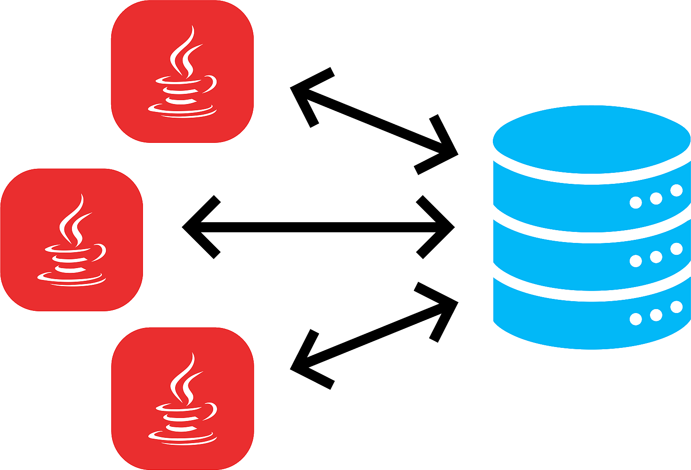
Hoy en día, la mayoría de aplicaciones informáticas necesitan almacenar y gestionar gran cantidad de datos.
Esos datos, se suelen guardar en bases de datos relacionales, ya que éstas son las más extendidas actualmente.
Las bases de datos relacionales permiten organizar los datos en tablas y esas tablas y datos se relacionan mediante campos clave. Además se trabaja con el lenguaje estándar conocido como SQL, para poder realizar las consultas que deseemos a la base de datos.
Base de datos relacional
Una base de datos relacional se puede definir de una manera simple como aquella que presenta la información en tablas con filas y columnas.
Una tabla es una serie de filas y columnas , en la que cada fila es un registro y cada columna es un campo. Un campo representa un dato de los elementos almacenados en la tabla (NSS, nombre, etc.). Cada registro representa un elemento de la tabla (la persona Jose, la persona Carmen, etc.)
No se permite que pueda aparecer dos o más veces el mismo registro, por lo que uno o más campos de la tabla forman lo que se conoce como clave primaria (atributo que se elige como identificador en una tabla, de manera que no haya dos registros iguales, sino que se diferencien al menos en esa clave). Por ejemplo, en el caso de una tabla que guarda datos de personas, el número de la seguridad social, podría elegirse como clave primaria, pues sabemos que aunque haya dos personas llamadas, por ejemplo, Juan Pérez Pérez, estamos seguros de que su número de seguridad social será distinto).
El sistema gestor de bases de datos, en inglés conocido como: Database Management System (DBMS) , gestiona el modo en que los datos se almacenan, mantienen y recuperan.
En el caso de una base de datos relacional, el sistema gestor de base de datos se denomina: Relational Database Management System (RDBMS).
Tradicionalmente, la programación de bases de datos ha sido como una Torre de Babel: gran cantidad de productos de bases de datos en el mercado, y cada uno “hablando” en su lenguaje privado con las aplicaciones.
Java, mediante JDBC (Java Database Connectivity, API que permite la ejecución de operaciones sobre bases de datos desde el lenguaje de programación Java, independientemente del sistema operativo donde se ejecute o de la base de datos a la cual se accede), permite simplificar el acceso a base de datos , proporcionando un lenguaje mediante el cual las aplicaciones pueden comunicarse con motores de bases de datos. Sun desarrolló este API para el acceso a bases de datos, con tres objetivos principales en mente:
- Ser un API con soporte de SQL: poder construir sentencias SQL e insertarlas dentro de llamadas al API de Java,
- Aprovechar la experiencia de los APIs de bases de datos existentes,
- Ser sencillo.
Qué es una API
API: Application Programming Interface (Interfaz de Programación de Aplicaciones). Conjunto de reglas y protocolos que permite a diferentes aplicaciones o sistemas comunicarse entre sí. En pocas palabras, actúa como un intermediario que permite que dos programas informáticos se comuniquen y compartan datos entre ellos de manera segura y eficiente. Las APIs se utilizan comúnmente en el desarrollo de software para permitir la integración de diferentes sistemas, la creación de aplicaciones de terceros y la automatización de procesos.
Un ejemplo sencillo de API podría ser el servicio de pronóstico del tiempo proporcionado por una compañía meteorológica. Imagina que tienes una aplicación de clima en tu teléfono. Esta aplicación necesita mostrar el pronóstico del tiempo actualizado, pero no tiene la capacidad de predecir el clima por sí misma.
En lugar de eso, la aplicación utiliza una API proporcionada por una empresa meteorológica. Esta API permite que la aplicación envíe una solicitud con la ubicación actual del usuario y, a cambio, recibe datos sobre el clima en esa ubicación. La API proporciona estos datos en un formato estructurado, como JSON o XML, que la aplicación puede interpretar y mostrar de manera comprensible para el usuario.
En resumen, la aplicación de clima utiliza la API de la empresa meteorológica para obtener datos actualizados sobre el pronóstico del tiempo sin tener que desarrollar su propio sistema de predicción meteorológica. La API actúa como un puente entre la aplicación y los recursos de la compañía meteorológica, permitiendo que la aplicación acceda y utilice esos recursos de manera fácil y eficiente.
1. Conexión a las BBDD: conectores
Dejemos de momento de lado el desfase Objeto-Relacional y centrémonos ahora en el acceso a Base de Datos Relacionales desde los lenguajes de programación. Lo razonaremos en general y lo aplicaremos a Java.
Desde la década de los 80 que existen a pleno rendimiento las bases de datos relacionales. Casi todos los Sistemas Gestores de Bases de Datos (excepto los más pequeños como Access o Base de LibreOffice) utilizan la arquitectura cliente-servidor. Esto significa que hay un ordenador central donde está instalado el Sistema Gestor de Bases de Datos Relacional que actúa como servidor, y habrá muchos clientes que se conectarán al servidor haciendo peticiones sobre la Base de Datos.
Los Sistemas Gestores de Bases de Datos inicialmente disponían de lenguajes de programación propios para poder hacer los accesos desde los clientes. Era muy consistente, pero a base de ser muy poco operativo:
- La empresa desarrolladora del SGBD debían mantener un lenguaje de programación, que resultaba necesariamente muy costoso, si no querían que quedara desfasado.
- Las empresas usuarias del SGBD, que se conectaban como clientes, se encontraban muy ligadas al servidor para tener que utilizar el lenguaje de programación para acceder al servidor, lo que no siempre se ajustaba a sus necesidades. Además, el plantearse cambiar de servidor, significaba que había que rehacer todos los programas, y por tanto una tarea de muchísima envergadura.
Para poder ser más operativos, había que desvincular los lenguajes de programación de los Sistemas Gestores de Bases de Datos utilizando unos estándares de conexión.
7.2 JDBC
Java puede conectarse con distintos SGBD y en diferentes sistemas operativos. Independientemente del método en que se almacenen los datos debe existir siempre un mediador entre la aplicación y el sistema de base de datos y en Java esa función la realiza JDBC.
El API JDBC
Para la conexión a las bases de datos utilizaremos el API estándar de JAVA denominada JDBC (Java Data Base Connectivity).
JDBC es un API incluido dentro del lenguaje Java para el acceso a bases de datos. Consiste en un conjunto de clases e interfaces escritas en Java que ofrecen un completo API para la programación con bases de datos, por lo tanto es la única solución 100% Java que permite el acceso a bases de datos.
JDBC es una especificación formada por una colección de interfaces y clases abstractas, que todos los fabricantes de drivers deben implementar si quieren realizar una implementación de su driver 100% Java y compatible con JDBC (JDBC-compliant driver). Debido a que JDBC está escrito completamente en Java también posee la ventaja de ser independiente de la plataforma.
A tener en cuenta
No será necesario escribir un programa para cada tipo de base de datos, una misma aplicación escrita utilizando JDBC podrá manejar bases de datos Oracle, Sybase, SQL Server, etc.
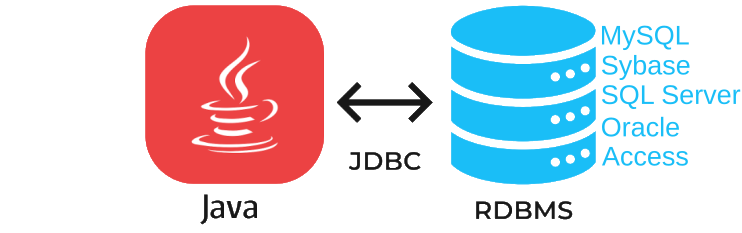
Además podrá ejecutarse en cualquier sistema operativo que posea una Máquina Virtual de Java, es decir, serán aplicaciones completamente independientes de la plataforma. Otras APIS que se suelen utilizar bastante para el acceso a bases de datos son DAO (Data Access Objects) y RDO (Remote Data Objects), y ADO (ActiveX Data Objects), pero el problema que ofrecen estas soluciones es que sólo son para plataformas Windows.
JDBC tiene sus clases en el paquete java.sql y otras extensiones en el paquete javax.sql.
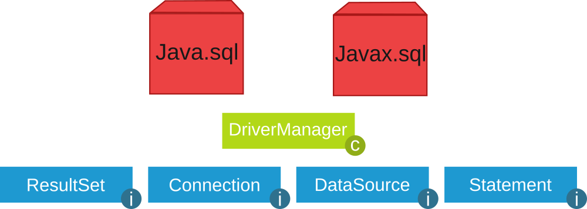
1. Funciones del JDBC
Básicamente el API JDBC hace posible la realización de las siguientes tareas:
- Establecer una conexión con una base de datos.
- Enviar sentencias SQL.
- Manipular datos.
- Procesar los resultados de la ejecución de las sentencias.
2. Drivers JDBC
Los drivers nos permiten conectarnos con una base de datos determinada. Existen cuatro tipos de drivers JDBC, cada tipo presenta una filosofía de trabajo diferente. A continuación se pasa a comentar cada uno de los drivers:
- JDBC-ODBC bridge plus ODBC driver (tipo 1): permite al programador acceder a fuentes de datos ODBC existentes mediante JDBC. El JDBC-ODBC Bridge (puente JDBC-ODBC) implementa operaciones JDBC traduciéndolas a operaciones ODBC, se encuentra dentro del paquete sun.jdbc.odbc y contiene librerías nativas para acceder a ODBC.
Al ser usuario de ODBC depende de las dll de ODBC y eso limita la cantidad de plataformas en donde se puede ejecutar la aplicación.
- Native-API partly-Java driver (tipo 2): son similares a los drivers de tipo1, en tanto en cuanto también necesitan una configuración en la máquina cliente. Este tipo de driver convierte llamadas JDBC a llamadas de Oracle, Sybase, Informix, DB2 u otros SGBD. Tampoco se pueden utilizar dentro de applets al poseer código nativo.
- JDBC-Net pure Java driver (tipo 3): Estos controladores están escritos en Java y se encargan de convertir las llamadas JDBC a un protocolo independiente de la base de datos y en la aplicación servidora utilizan las funciones nativas del sistema de gestión de base de datos mediante el uso de una biblioteca JDBC en el servidor. La ventaja de esta opción es la portabilidad.
- JDBC de Java cliente (tipo 4): Estos controladores están escritos en Java y se encargan de convertir las llamadas JDBC a un protocolo independiente de la base de datos y en la aplicación servidora utilizan las funciones nativas del sistema de gestión de base de datos sin necesidad de bibliotecas. La ventaja de esta opción es la portabilidad. Son como los drivers de tipo 3 pero sin la figura del intermediario y tampoco requieren ninguna configuración en la máquina cliente. Los drivers de tipo 4 se pueden utilizar para servidores Web de tamaño pequeño y medio, así como para intranets.
3. Instalación controlador MySql
1) El primer paso es descargar desde https://www.mysql.com/products/connector/ el conector apropiado.
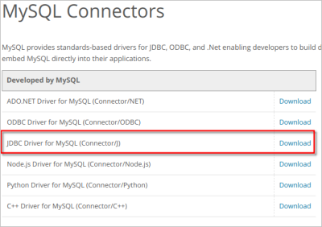
2) Elegir Sistema Operativo y versión (Para Windows: Platform Independent en ZIP):
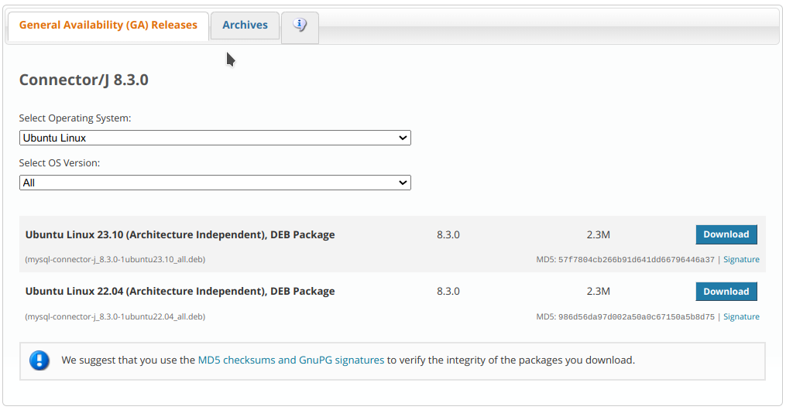
3) Haz clic en Donwload y selecciona la opción: No thanks, just start download
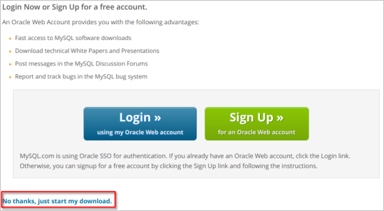
4) Ejecuta el fichero deb (en el caso de Ubuntu) descargado (No necesario en Windows):
5) Ahora deberemos añadir la librería JDBC a nuestro proyecto. Para ello copia el archivo mysql-connector-java-x.x.x.jar (en Ubuntu se encuentra en la ruta /usr/share/java) en JAVA PROJECTS -> Referenced Libraries de VS Code:
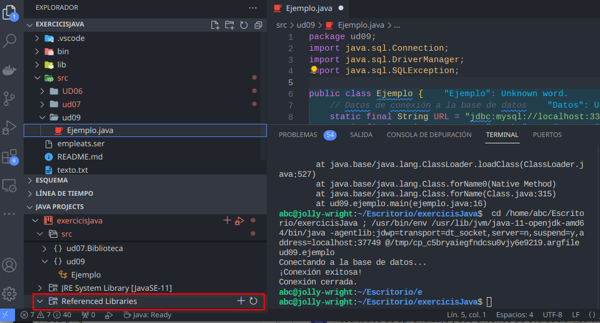
4. Carga del controlador JDBC y conexión con la BD
El primer paso para conectarnos a una base de datos mediante JDBC es cargar el controlador apropiado. Estos controladores se distribuyen en un archivo .jar que provee el fabricante del SGBD y deben estar accesibles por la aplicación.
Para cargar el controlador se usan las siguientes sentencias:
// clase ConnectToMySql.java
import java.sql.*;
public class ConnectToMySql {
// JDBC URL, usuario y contraseña de la base de datos
private static final String JDBC_URL = "jdbc:mysql://localhost:3306/prueba";
private static final String USUARIO = "prueba";
private static final String CONTRASEÑA = "1234";
public static void main(String[] args) {
try {
// Dependiendo de a qué tipo de SGBD queramos conectar cargaremos un controlador u otro
// Paso 1: Cargar el controlador JDBC de MySQL
Class<?> c = Class.forName("com.mysql.cj.jdbc.Driver");
System.out.println("Cargado: " + c.getName());
//Definir la url de conexión y los parámetros de usuario y contraseña
// Paso 2: Establecer la conexión con la base de datos
Connection conexion = DriverManager.getConnection(JDBC_URL, USUARIO, CONTRASEÑA);
System.out.println("Conexión completada");
// Paso 3: Aquí puedes realizar operaciones en la base de datos
// ...
// Paso 4: Cerrar la conexión
conexion.close();
System.out.println("Conexión cerrada correctamente.");
} catch (ClassNotFoundException cnfe) {
System.out.println("ERROR al no encontrarse la clase controlador JDBC: " + cnfe.getMessage());
} catch (SQLException ex) {
System.out.println("ERROR al conectar: " + ex.getMessage());
}
}
}Observamos las siguientes cuestiones:
- Como ya hemos comentado alguna vez, la sentencia
Class.forName()no sería necesaria en muchas aplicaciones. Pero nos asegura que hemos cargado el driver, y por tanto elDriverManagerla sabrá manejar. - El
DriverManageres capaz de encontrar el driver adecuado a través de la url proporcionada (sobre todo si el driver está cargado en memoria), y es quien nos proporciona el objetoConnectionpor medio del métodogetConnection(). Existe otra forma de obtener elConnectionpor medio del objetoDriver, como veremos más adelante, pero también será pasando indirectamente porDriverManager. - Si no se encuentra la clase del driver (por no tenerlo en las librerías del proyecto, o haber escrito mal su nombre) se producirá la excepción
ClassNotFoundException. Es conveniente tratarla contry ... catch. - Si no se puede establecer la conexión por alguna razón se producirá la excepción
SQLException. Al igual que en el caso anterior, es conveniente tratarla contry ... catch. - El objeto
Connectionmantendrá una conexión con la Base de Datos desde el momento de la creación hasta el momento de cerrarla conclose(). Es muy importante cerrar la conexión, no sólo para liberar la memoria de nuestro ordenador (que al cerrar la aplicación liberaría), sino sobre todo para cerrar la sesión abierta en el Servidor de Bases de Datos.
4.1. Conexión alternativa mediante Driver
Una manera de conectar alternativa a las anteriores es utilizando el objeto Driver. La clase java.sql.Driver pertenece a la API JDBC, pero no es instanciable, y tan sólo es una interfaz, para que las clases Driver de los contenedores hereden de ella e implementen la manera exacta de acceder al SGBD correspondiente. Como no es instanciable (no podemos hacer new Driver()) la manera de crearlo es a través del método getDriver() del DriverManager, que seleccionará el driver adecuado a partir de la url. Ya sólo quedarán definir algunas propiedades, como el usuario y la contraseña, y obtener el Connection por medio del método connect()
La manera de conectar a través de un objeto Driver es más larga, pero más completa ya que se podrían especificar más cosas. Y quizás ayude a entender el montaje de los controladores de los diferentes SGBD en Java.
import java.sql.Connection;
import java.sql.Driver;
import java.sql.DriverManager;
import java.sql.SQLException;
import java.util.Properties;
public class ConnectToMySqlDriver {
// JDBC URL, usuario y contraseña de la base de datos
private static final String JDBC_URL = "jdbc:mysql://localhost:3306/prueba";
private static final String USUARIO = "prueba";
private static final String CONTRASEÑA = "1234";
public static void main(String[] args) {
try{
Driver driver = DriverManager.getDriver(JDBC_URL);
Properties properties = new Properties();
properties.setProperty("user", USUARIO);
properties.setProperty("password", CONTRASEÑA);
Connection conexion = driver.connect(JDBC_URL, properties);
System.out.println("Conexión completada a través de Driver");
// Cerrar la conexión
conexion.close();
System.out.println("Conexión cerrada correctamente.");
} catch (SQLException ex) {
System.out.println("ERROR al conectar: " + ex.getMessage());
}
}
}5. Carga del controlador y de la conexión mediante el patrón Singleton
Este patrón de diseño está diseñado para restringir la creación de objetos pertenecientes a una clase.
El sino de Singleton
Su intención consiste en garantizar que una clase sólo tenga una instancia y proporcionar un punto de acceso global a ella.
El patrón Singleton se implementa creando en nuestra clase un método que crea una instancia del objeto sólo si todavía no existe alguna.
Para asegurar que la clase no puede ser instanciada nuevamente se regula el alcance del constructor haciéndolo privado. Las situaciones más habituales de aplicación de este patrón son aquellas en las que dicha clase ofrece un conjunto de utilidades comunes para todas las capas (como puede ser el sistema de log, conexión a la base de datos, …) o cuando cierto tipo de datos debe estar disponible para todos los demás objetos de la aplicación (en java no hay variables globales) El patrón Singleton provee una única instancia global gracias a que:
- La propia clase es responsable de crear la única instancia.
- Permite el acceso global a dicha instancia mediante un método de clase.
- Declara el constructor de clase como privado para que no sea instanciable directamente.
/**
@see https://stackoverflow.com/questions/6567839/if-i-use-a-singleton-class-for-a-database-connection-can-one-user-close-the-con
Patron Singleton
*/
public class DatabaseConnection {
// JDBC URL, usuario y contraseña de la base de datos
private static final String JDBC_URL = "jdbc:mysql://localhost:3306/prueba";
private static final String USUARIO = "prueba";
private static final String CONTRASEÑA = "1234";
private static DatabaseConnection dbInstance; //Variable para almacenar la unica instancia de la clase
private static java.sql.Connection conexion;
private DatabaseConnection() {
// El Constructor es privado!!
}
public static DatabaseConnection getInstance(){
//Si no hay ninguna instancia...
if(dbInstance == null){
dbInstance = new DatabaseConnection();
}
return dbInstance;
}
public static java.sql.Connection getConnection(){
if(conexion == null){
try {
conexion = java.sql.DriverManager.getConnection(JDBC_URL, USUARIO, CONTRASEÑA);
System.out.println("Conexión realizada");
} catch (java.sql.SQLException ex) {
System.out.println("ERROR al conectar: " + ex.getMessage());
}
}
return conexion;
}
}Para probar el patrón Singleton creamos, en la aplicación BlueJ, el siguiente ejemplo:
( 1 ) Se añaden las librerías desde Herramientas -> Preferencias -> Librerías
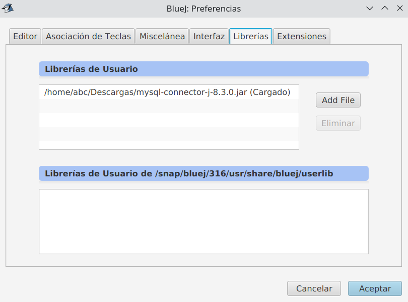
( 2 ) Creamos una nueva clase DatabaseConnection (añadir el código anterior) en BlueJ:
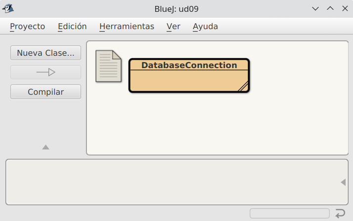
( 3 ) Vamos a crear una nueva clase Test para probar la conexión:
import java.sql.*;
public class Test {
static java.sql.Connection con = DatabaseConnection.getInstance().getConnection();
public Test(){
//De momento no hace nada
}
}( 5 ) Compilar ambas clases:
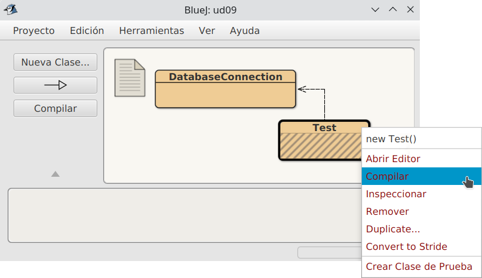
( 6 ) Lanzar varios test (para comprobar la única conexión a establecida):
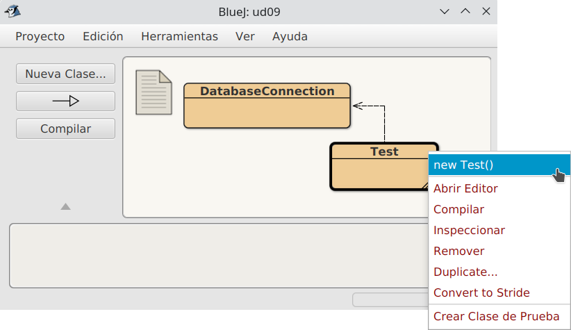
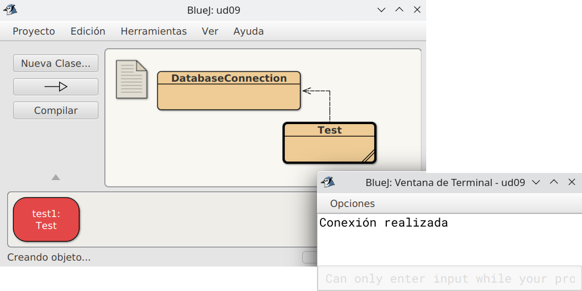
7.3 Acceso a BBDD
1. Cargar el Driver
En un proyecto Java que realice conexiones a bases de datos es necesario, antes que nada, utilizar Class.forname(…).newInstance() para cargar dinámicamente el Driver que vamos a utilizar. Esto solo es necesario hacerlo una vez en nuestro programa. Puede lanzar excepciones por lo que es necesario utilizar un bloque try-catch.
try {
Class.forName("com.mysql.cj.jdbc.Driver").newInstance();
} catch (Exception e) {
// manejamos el error
}Hay que tener en cuenta que las clases y métodos utilizados para conectarse a una base de datos (explicados más adelante) funcionan con todos los drivers disponibles para Java (JDBC es solo uno, hay muchos más). Esto es posible ya que el estándar de Java solo los define como interfaces (interface) y cada librería driver los implementa (define las clases y su código). Por ello es necesario utilizar Class.forName(…) para indicarle a Java qué driver vamos a utilizar.
Este nivel de asbtracción facilita el desarrollo de proyectos ya que si necesitáramos utilizar otro sistema de base de datos (que no fuera MySQL) solo necesitaríamos cambiar la línea de código que carga el driver y poco más. Si cada sistema de base de datos necesitara que utilizáramos distintas clases y métodos todo sería mucho más complicado.
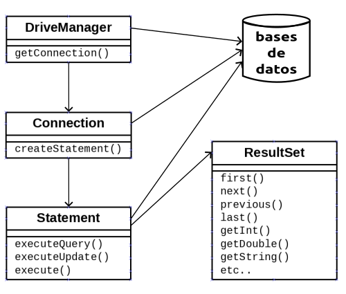
Las cuatro clases fundamentales que toda aplicación Java necesita para conectarse a una base de datos y ejecutar sentencias son: DriverManager, Connection, Statement y ResultSet.
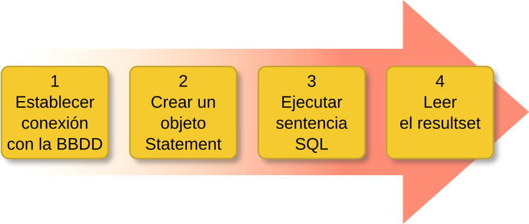
2. Clase DriverManager
Paso 1: Establecer conexión con la BBDD
Ejemplo de conexión según SGBD
/* Para MySQL:
jdbc --> driver
mysql --> protocolo driver
localhost:3306/gestionPedidos --> detalles de la conexión
*/
jdbc:mysql://localhost:3306/gestionPedidos
jdbc:odbc:DSN_gestionPedidos // para SQL Server
jdbc:oracle:juan@servidor:3306:gestionPedidos // para OracleVamos a necesitar información adicional como son los datos de usuario y contraseña.
La clase java.sql.DriverManager es la capa gestora del driver JDBC. Se encarga de manejar el Driver apropiado y permite crear conexiones con una base de datos mediante el método estático getConnection() que tiene dos variantes:
DriveManager.getConnection(String url)
// y
DriveManager.getConnection(String url, String user, String password)Este método intentará establecer una conexión con la base de datos según la URL indicada. Opcionalmente se le puede pasar el usuario y contraseña como argumento (también se puede indicar en la propia URL). Si la conexión es satisfactoria devolverá un objeto Connection.
Ejemplo de conexión a la base de datos prueba en localhost
String url = "jdbc:mysql://localhost:3306/prueba";
Connection conexion = DriverManager.getConnection(url,"root","");Este método puede lanzar dos tipos de excepciones (que habrá que manejar con un try-catch):
- SQLException: la conexión no ha podido producirse. Puede ser por multitud de motivos como una URL mal formada, un error en la red, host o puerto incorrecto, base de datos no existente, usuario y contraseña no válidos, etc.
- SQLTimeoutException: se ha superado el LoginTimeout sin recibir respuesta del servidor.
3. Clase Connection
Paso 2. Crear un objeto Statement
Un objeto java.sql.Connection representa una sesión de conexión con una base de datos. Una aplicación puede tener tantas conexiones como necesite, ya sea con una o varias bases de datos.
El método más relevante es createStatement() que devuelve un objeto Statement asociado a dicha conexión que permite ejecutar sentencias SQL.
El método createStatement() también puede lanzar excepciones de tipo SQLException.
Statement st = conexion.createStatement();Cuando ya no la necesitemos es aconsejable cerrar la conexión con close() para liberar recursos:
conexion.close();4. Clase Statement
Paso 3. Ejecutar sentencia SQL
Un objeto java.sql.Statement permite ejecutar sentencias SQL en la base de datos a través de la conexión con la que se creó el Statement (ver Paso 2). Los tres métodos más comunes de ejecución de sentencias SQL son executeQuery(…), executeUpdate(…) y execute(…).
Estos tres métodos pueden lanzar excepciones de tipo SQLException y SQLTimeoutException.
ResultSet executeQuery(String sql): ejecuta la sentencia sql indicada (de tipo SELECT). Devuelve un objeto ResultSet con los datos proporcionados por el servidor.
ResultSet rs = st.executeQuery("SELECT * FROM vendedores");int executeUpdate(String sql): ejecuta la sentencia sql indicada (de tipo DML como por ejemplo INSERT, UPDATE o DELETE). Devuelve un número de registros que han sido insertados, modificados o eliminados.
int nr = st.executeUpdate ("INSERT INTO vendedores VALUES (1,'Pedro Gil', '2017-04-11', 15000);")Cuando ya no lo necesitemos es aconsejable cerrar el statement con close() para liberar recursos:
st.close();Nota
Podríamos decir que este resultset es una especie de tabla virtual que se almacena en memoria con la información en su interior.
5. Clase ResultSet
Paso 4. Leer el resultset
Un objeto java.sql.ResultSet contiene un conjunto de resultados (datos) obtenidos tras ejecutar una sentencia SQL, normalmente de tipo SELECT. Es una estructura de datos en forma de tabla con registros (filas) que podemos recorrer para acceder a la información de sus campos (columnas).
ResultSet utiliza internamente un cursor que apunta al registro actual sobre el que podemos operar. Inicialmente dicho cursor está situado antes de la primera fila y disponemos de varios métodos para desplazar el cursor. El más común es next():
boolean next(): mueve el cursor al siguiente registro. Devuelve true si fue posible y false en caso contrario (si ya llegamos al final de la tabla).
Algunos de los métodos para obtener los datos del registro actual son:
String getString(String columnLabel): devuelve un dato String de la columna indicada por su nombre.
Por ejemplo
rs.getString("nombre");String getString(int columnIndex): devuelve un dato String de la columna indicada por su nombre (la primera columna es la 1, no la cero).
Por ejemplo
rs.getString(2);Existen métodos análogos a los anteriores para obtener valores de tipo int, long, float, double, boolean, Date, Time, Array, etc. Pueden consultarse todos en la documentación oficial de Java.
int getInt(String columnLabel)int getInt(int columnIndex)double getDouble(String columnLabel)double getDouble(int columnIndex)boolean getBoolean(String columnLabel)boolean getBoolean(int columnIndex)Date getDate(String columnLabel)Date getDate(int columnIndex)- etc.
Más adelante veremos cómo se realiza la modificación e inserción de datos.
Todos estos métodos pueden lanzar una SQLException.
Ejemplo para recorrer un ResultSet llamado rs y mostrarlo por pantalla
while(rs.next()) {
int id = rs.getInt("id");
String nombre = rs.getString("nombre");
Date fecha = rs.getDate("fecha_ingreso");
float salario = rs.getFloat("salario");
System.out.println(id + " " + nombre + " " + fecha + " " + salario);
}Ejercicio previo: crear base de datos
Para la realización de los ejercicios deberás crear una base de datos en tu SGBD (MySql) de nombre pr_tuNombre.
Para ello deberás de crear un usuario de nombre pr_tuNombre con contraseña 1234 y con una base de datos con el mismo nombre:
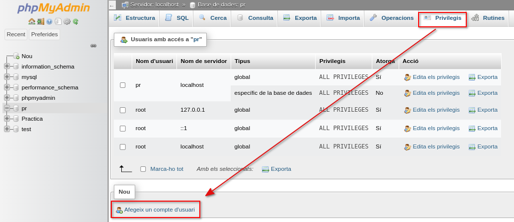
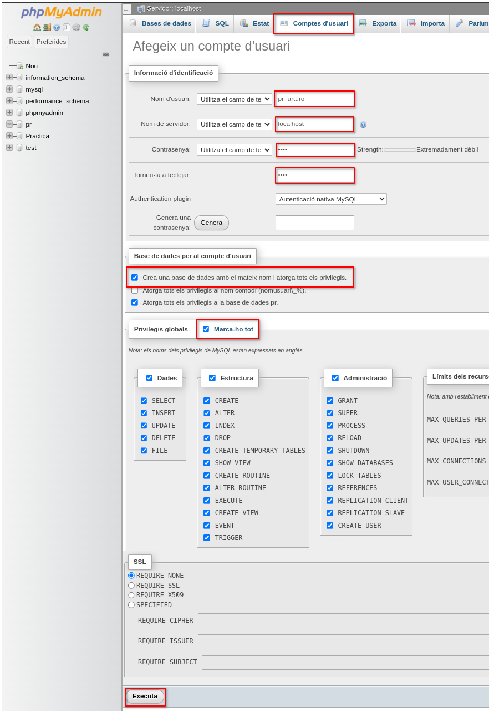
Descarga el fichero sql tablas.sql e insértalas en tu base de datos.
Para ello, ve a la pestaña de phpMyAdmin
Importa, selecciona el fichero descargado anteriormente y ejecútalo.
Ejemplo Connection, Statement y ResultSet
public class DbConnect {
// JDBC URL, usuario y contraseña de la base de datos
private static final String JDBC_URL = "jdbc:mysql://localhost:3306/pr_ana";
private static final String USUARIO = "pr_ana";
private static final String CONTRASEÑA = "1234";
private static DbConnect dbInstance; //Variable para almacenar la unica instancia de la clase
private static java.sql.Connection conexion;
private DbConnect() {
// El Constructor es privado!!
}
public static DbConnect getInstance(){
//Si no hay ninguna instancia...
if(dbInstance == null){
dbInstance = new DbConnect();
}
return dbInstance;
}
public static java.sql.Connection getConnection(){
if(conexion == null){
try {
conexion = java.sql.DriverManager.getConnection(JDBC_URL, USUARIO, CONTRASEÑA);
System.out.println("Conexión realizada SINGLETON");
} catch (java.sql.SQLException ex) {
System.out.println("ERROR al conectar: " + ex.getMessage());
}
}
return conexion;
}
}import java.sql.*;
public class Test {
public static void main(String[] args) {
//Paso 1: Crear y almacenar conexión
DbConnect.getInstance();
Connection conexion = DbConnect.getConnection();
try {
//Paso 2: Crear el statement
Statement st = conexion.createStatement();
// Paso 3: Aquí puedes realizar operaciones en la base de datos
//Insert
int nr = st.executeUpdate("INSERT INTO alumnos(nombre) VALUES ('Ana Asins');");
//Update
nr = st.executeUpdate("UPDATE alumnos SET edad = 28 WHERE nombre = 'Ana Asins';");
//Select
ResultSet rs = st.executeQuery("SELECT * FROM alumnos");
//Recorrer datos devueltos
while (rs.next()) {
String nombre = rs.getString("nombre");
int edad = rs.getInt("edad");
System.out.println("El alumno " + nombre + " tiene " +edad + " años.");
}
// Paso 4: Cerrar la conexión
st.close();
conexion.close();
System.out.println("Conexión cerrada correctamente.");
} catch (SQLException ex) {
System.out.println("ERROR al conectar: " + ex.getMessage());
}
}
}Siguiendo el ejemplo anterior...
Después de esto, crea un ejercicio de nombre ListarProveedores.java en el que se liste todos los proveedores.
7.4 Navegabilidad y concurrencia
Cuando invocamos a createStatement() sin argumentos, como hemos visto anteriormente, al ejecutar sentencias SQL obtendremos un ResultSet por defecto en el que el cursor solo puede moverse hacia adelante y los datos son de solo lectura. A veces esto no es suficiente y necesitamos mayor funcionalidad.
Por ello el método createStatement() está sobrecargado (existen varias versiones de dicho método), lo cual nos permite invocarlo con argumentos en los que podemos especificar el funcionamiento.
Statement createStatement (int resultSetType, int resultSetConcurrency): devuelve un objeto Statement cuyos objetos ResultSet serán del tipo y concurrencia especificados. Los valores válidos son constantes definidas en ResultSet.
Valores válidos para el argumento resultSetType (indica el tipo de ResultSet):
ResultSet.TYPE_FORWARD_ONLY: ResultSet por defecto, forward-only y no-actualizable.- Solo permite movimiento hacia delante con
next(). - Sus datos NO se actualizan. Es decir, no reflejará cambios producidos en la base de datos. Contiene una instantánea del momento en el que se realizó la consulta.
- Solo permite movimiento hacia delante con
ResultSet.TYPE_SCROLL_INSENSITIVE: ResultSet desplazable y no-actualizable.- Permite libertad de movimiento del cursor con otros métodos como
first(),previous(),last(), etc. además denext(). - Sus datos NO se actualizan, como en el caso anterior.
- Permite libertad de movimiento del cursor con otros métodos como
ResultSet.TYPE_SCROLL_SENSITIVE: ResultSet desplazable y actualizable.- Permite libertad de movimientos del cursor, como en el caso anterior.
- Sus datos SÍ se actualizan. Es decir, mientras el ResultSet esté abierto se actualizará automáticamente con los cambios producidos en la base de datos. Esto puede suceder incluso mientras se está recorriendo el ResultSet, lo cual puede ser conveniente o contraproducente según el caso.
Diferencia entre ResultSet.TYPE_SCROLL_INSENSITIVE y ResultSet.TYPE_SCROLL_SENSITIVE
import java.sql.*;
public class EjemploScrollInsensitive {
private static final String JDBC_URL = "jdbc:mysql://localhost:3306/pr_tuNombre";
private static final String USUARIO = "pr_tuNombre";
private static final String PASSWD = "1234";
public static void main(String[] args) {
try (Connection con = DriverManager.getConnection(JDBC_URL, USUARIO, PASSWD);
Statement stmt = con.createStatement(ResultSet.TYPE_SCROLL_INSENSITIVE, ResultSet.CONCUR_READ_ONLY);
ResultSet rs = stmt.executeQuery("SELECT id, nombre FROM usuarios")) {
// Mover a la primera fila
if (rs.first()) {
System.out.println("primera fila: " + rs.getInt("id") + ", " + rs.getString("nombre"));
}
// Mover a la última fila
if (rs.last()) {
System.out.println("última fila: " + rs.getInt("id") + ", " + rs.getString("nombre"));
}
// Simulamos un retraso y actualizamos la base de datos (en otra sesión)
System.out.println("Esperando las actualizaciones...");
Thread.sleep(10000); // Esperar 10 segundos
// Mover a la primera fila otra vez
if (rs.first()) {
System.out.println("primera fila después de esperar: " + rs.getInt("id") + ", " + rs.getString("nombre"));
}
} catch (SQLException | InterruptedException ex) {
ex.printStackTrace();
}
}
}En este ejemplo, incluso si la base de datos cambia mientras el programa está esperando (durante el
Thread.sleep(10000)), el ResultSet no reflejará esos cambios cuando se vuelva a consultar la primera fila.En caso de cambiar el valor
ResultSet.TYPE_SCROLL_INSENSITIVE por ResultSet.TYPE_SCROLL_SENSITIVE, si hay cambios en la base de datos durante el tiempo de espera, el ResultSet reflejará esos cambios cuando se vuelva a consultar la primera fila. Por ejemplo, si se actualiza el nombre del primer registro en la base de datos mientras el programa espera, el nuevo nombre aparecerá en la salida.Estos ejemplos demuestran cómo ResultSet.TYPE_SCROLL_INSENSITIVE no refleja cambios en la base de datos después de su creación, mientras que ResultSet.TYPE_SCROLL_SENSITIVE sí lo hace.
Valores válidos para el argumento resultSet.Concurrency (indica la concurrencia del ResultSet):
ResultSet.CONCUR_READ_ONLY: solo lectura. Es el valor por defecto.ResultSet.CONCUR_UPDATABLE: permite modificar los datos almacenados en el ResultSet para luego aplicar los cambios sobre la base de datos (puedes insertar, actualizar y borrar filas). Más adelante se verá cómo).
A tener en cuenta
El ResultSet por defecto que se obtiene con createStatement() sin argumentos es el mismo que con createStatement(ResultSet.TYPE_FORWARD_ONLY, ResultSet.CONCUR_READ_ONLY).
7.5 Consultas (Query)
1. Navegación de un ResultSet
Como ya se ha visto, en un objeto ResultSet se encuentran los resultados de la ejecución de una sentencia SQL. Por lo tanto, un objeto ResultSet contiene las filas que satisfacen las condiciones de una sentencia SQL, y ofrece métodos de navegación por los registros como next() que desplaza el cursos al siguiente registro del ResultSet.
Además de este método de desplazamiento básico, existen otros de desplazamiento libre que podremos utilizar siempre y cuando el ResultSet sea de tipo ResultSet.TYPE_SCROLL_INSENSITIVE o ResultSet.TYPE_SCROLL_SENSITIVE como se ha dicho antes.
Algunos de estos métodos son:
-
void beforeFirst(): mueve el cursor antes de la primera fila. -
boolean first(): mueve el cursor a la primera fila. -
boolean next(): mueve el cursor a la siguiente fila. Permitido en todos los tipos de ResultSet. -
boolean previous(): mueve el cursor a la fila anterior. -
boolean last(): mueve el cursor a la última fila. -
void afterLast(): mover el cursor después de la última fila. -
boolean absolute(int row): posiciona el cursor en el número de registro indicado. Hay que tener en cuenta que el primer registro es el 1, no el cero.
Ejemplo absolute(n)
absolute(7) desplazará el cursor al séptimo registro. Si valor es negativo se posiciona en el número de registro indicado pero empezando a contar desde el final (el último es el -1). Por ejemplo si tiene 10 registros y llamamos absolute(-2) se desplazará al registro número 9.
boolean relative(int registros): desplaza el cursor un número relativo de registros, que puede ser positivo o negativo.
Ejemplo relative(n)
Si el cursor está en el registro 5 y llamamos a relative(10) se desplazará al registro número 15. Si luego llamamos a relative(-4) se desplazará al registro 11.
Los métodos que devuelven un tipo boolean devolverán true si ha sido posible mover el cursor a un registro válido, y false en caso contrario, por ejemplo si no tiene ningún registro o hemos saltado a un número de registro que no existe.
Todos estos métodos pueden producir una excepción de tipo SQLException.
También existen otros métodos relacionados con la posición del cursor.
int getRow(): devuelve el número de registro actual. Cero si no hay registro actual.boolean isBeforeFirst(): devuelve true si el cursor está antes del primer registro.boolean isFirst(): devuelve true si el cursor está en el primer registro.boolean isLast(): devuelve true si el cursor está en el último registro.boolean isAfterLast(): devuelve true si el cursor está después del último registro.
2. Obteniendo datos del ResultSet
Los métodos getXXX() ofrecen los medios para recuperar los valores de las columnas (campos) de la fila (registro) actual del ResultSet. No es necesario que las columnas sean obtenidas utilizando un orden determinado.
Para designar una columna podemos utilizar su nombre o bien su número (empezando por 1).
Por ejemplo si la segunda columna de un objeto ResultSet se llama título y almacena datos de tipo String, se podrá recuperar su valor de las dos formas siguientes:
// rs es un objeto ResultSet
String valor = rs.getString(2);
String valor = rs.getString("titulo");
Es importante tener en cuenta que las columnas se numeran de izquierda a derecha y que la primera es la número 1, no la cero.
También que las columnas no son case sensitive, es decir, no distinguen entre mayúsculas y minúsculas.
A tener en cuenta
La información referente a las columnas de un ResultSet se puede obtener llamando al método getMetaData() que devolverá un objeto ResultSetMetaData que contendrá el número, tipo y propiedades de las columnas del ResultSet. EJEMPLO:
import java.sql.*;
public class EjemploResultSetMetaData {
private static final String JDBC_URL = "jdbc:mysql://localhost:3306/pr_tuNombre";
private static final String USUARIO = "pr_tuNombre";
private static final String PASSWD = "1234";
public static void main(String[] args) {
try (Connection con = DriverManager.getConnection(JDBC_URL, USUARIO, PASSWD);
Statement stmt = con.createStatement();
ResultSet rs = stmt.executeQuery("SELECT id, nombre, fecha_ingreso, salario FROM proveedores")) {
// Obtener metadata del ResulSet
ResultSetMetaData rsmd = rs.getMetaData();
// Obtener el número de columnas
int columnCount = rsmd.getColumnCount();
System.out.println("Número de columnas: " + columnCount);
// Listar las columnas de detalles
for (int i = 1; i <= columnCount; i++) {
String columnName = rsmd.getColumnName(i);
String columnType = rsmd.getColumnTypeName(i);
int columnDisplaySize = rsmd.getColumnDisplaySize(i);
boolean isNullable = rsmd.isNullable(i) == ResultSetMetaData.columnNullable;
System.out.println("Columna " + i + ":");
System.out.println(" Nombre: " + columnName);
System.out.println(" Tipo: " + columnType);
System.out.println(" Tamaño display: " + columnDisplaySize);
System.out.println(" Nullable: " + isNullable);
}
// Iterar sobre el conjunto de resultados
while (rs.next()) {
for (int i = 1; i <= columnCount; i++) {
System.out.print(rs.getString(i) + " ");
}
System.out.println();
}
} catch (SQLException ex) {
System.out.println("Error de SQL: " + ex.getMessage());
}
}
} Si conocemos el nombre de una columna, pero no su índice, el método findColumn() puede ser utilizado para obtener el número de columna, pasándole como argumento un objeto String que sea el nombre de la columna correspondiente, este método nos devolverá un entero que será el índice correspondiente a la columna.
3. Tipos de datos y conversiones
Cuando se lanza un método getXXX() determinado sobre un objeto ResultSet para obtener el valor de un campo del registro actual, el driver JDBC convierte el dato que se quiere recuperar al tipo Java especificado y entonces devuelve un valor Java adecuado. Por ejemplo si utilizamos el método getString() y el tipo del dato en la base de datos es VARCHAR, el driver JDBC convertirá el dato VARCHAR de tipo SQL a un objeto String de Java.
Algo parecido sucede con otros tipos de datos SQL como por ejemplo DATE. Podremos acceder a él tanto con getDate() como con getString(). La diferencia es que el primero devolverá un objeto Java de tipo Date y el segundo devolverá un String.
Siempre que sea posible el driver JDBC convertirá el tipo de dato almacenado en la base de datos al tipo solicitado por el método getXXX(), pero hay conversiones que no se pueden realizar y lanzarán una excepción, como por ejemplo si intentamos hacer un getInt() sobre un campo que no contiene un valor numérico.
4. Sentencias que no devuelven datos
Las ejecutamos con el método executeUpdate. Serán todas las sentencias SQL excepto el SELECT, que es la de consulta. Es decir, nos servirá para las siguientes sentencias:
- Sentencias que cambian las estructuras internas de la BD donde se guardan los datos (instrucciones conocidas con las siglas DDL, del inglés Data Definition Language), como por ejemplo
CREATE TABLE,CREATE VIEW,ALTER TABLE,DROP TABLE, …, - Sentencias para otorgar permisos a los usuarios existentes o crear otros nuevos (subgrupo de instrucciones conocidas como DCL o Data Control Language), como por ejemplo
GRANT. - Y también las sentencias para modificar los datos guardados utilizando las instrucciones
INSERT,UPDATEyDELETE.
Aunque se trata de sentencias muy dispares, desde el punto de vista de la comunicación con el SGBD se comportan de manera muy similar, siguiendo el siguiente patrón:
- Instanciación del
Statementa partir de una conexión activa. - Ejecución de una sentencia SQL pasada por parámetro al método
executeUpdate. - Cierre del objeto
Statementinstanciado.
Miremos este ejemplo, en el que vamos a crear una tabla muy sencilla en la Base de Datos MySql/network.
Aquí tienes la clase DatabaseConnection
/**
<br />* Write a description of class DatabaseConnection here.
<br />*
<br />* @author (Victor Ponz)
<br />* @see <a href="https://stackoverflow.com/questions/6567839/if-i-use-a-singleton-class-for-a-database-connection-can-one-user-close-the-con">Stackoverflow Singleton</a>
<br />* Patron Singleton
<br />* ================
<br />* Este patrón de diseño está diseñado para restringir la creación de objetos pertenecientes a una clase. Su intención consiste en garantizar que
<br />* una clase sólo tenga una instancia y proporcionar un punto de acceso global a ella.
<br />* El patrón Singleton se implementa creando en nuestra clase un método que crea una instancia del objeto sólo si todavía no existe alguna.
<br />* Para asegurar que la clase no puede ser instanciada nuevamente se regula el alcance del constructor haciéndolo privado.
<br />* Las situaciones más habituales de aplicación de este patrón son aquellas en las que dicha clase ofrece un conjunto de utilidades comunes
<br />* para todas las capas (como puede ser el sistema de log, conexión a la base de datos, ...)
<br />* o cuando cierto tipo de datos debe estar disponible para todos los demás objetos de la aplicación.
<br />* El patrón Singleton provee una única instancia global gracias a que:
<br />* - La propia clase es responsable de crear la única instancia.
<br />* - Permite el acceso global a dicha instancia mediante un método de clase.
<br />* - Declara el constructor de clase como privado para que no sea instanciable directamente.
<br />*/
public class DatabaseConnection {
private static DatabaseConnection dbInstance; //Variable para almacenar la unica instancia de la clase
private static java.sql.Connection con;
private DatabaseConnection() {
// El Constructor es privado!!
}
public static DatabaseConnection getInstance(){
//Si no hay ninguna instancia...
if(dbInstance==null){
dbInstance= new DatabaseConnection();
}
return dbInstance;
}
public static java.sql.Connection getConnection(){
if(con == null){
try {
String host = "jdbc:mysql://localhost:3306/nombre-de-la-base-de-datos";
String username = "root";
String password = "sa";
con = java.sql.DriverManager.getConnection( host, username, password );
System.out.println("Conexión realizada");
} catch (java.sql.SQLException ex) {
System.out.println("Se ha producido un error al conectar: " + ex.getMessage());
}
}
return con;
}
}import java.sql.Connection;
import java.sql.DriverManager;
import java.sql.SQLException;
import java.sql.Statement;
public class Test {
static java.sql.Connection con = DatabaseConnection.getInstance().getConnection();
public Test(){
//De momento no hace nada
}
public void createTable() throws SQLException{
Statement st = con.createStatement();
st.executeUpdate("CREATE TABLE T1 (c1 varchar(50))");
st.close();
}
}5. Sentencias que devuelven datos
Las ejecutamos con el método executeQuery. Servirá para la sentencia SELECT (sentencia de consulta). Los datos que nos devuelva esta sentencia las tendremos que guardar en un objeto de la clase java.sql.ResultSet, es decir conjunto de resultado. Por lo tanto, la ejecución de las consultas tendrá una forma similar a la siguiente:
ResultSet rs = st.executeQuery(sentenciaSQL);- El objeto
ResultSetcontiene el resultado de la consulta organizado por filas, por lo que en cada momento se puede consultar una fila. - Para ir visitando todas las filas de una a una, iremos llamando el método
next()del objetoResultSet, ya que cada vez que se ejecutenextavanzará a la siguiente fila. - Inmediatamente después de una ejecución, el
ResultSetse encuentra posicionado justo antes de la primera fila, por lo tanto para acceder a la primera fila será necesario ejecutarnextuna vez. - Cuando las filas se acaban, el método
nextdevolverá falso.
Desde cada fila se podrá acceder al valor de sus columnas con ayuda de varios métodos getXXX disponibles según el tipo de datos a devolver y pasando por parámetro el número de columna que deseamos obtener. El nombre de los métodos comienza por get seguido del nombre del tipo de datos. Así, si queremos recuperar la segunda columna, sabiendo que es un dato de tipo String habrá que ejecutar:
rs.getString(2);Las columnas se empiezan a contar a partir del valor 1 (no cero). La mayor parte de los SGDB soportan la posibilidad de pasar por parámetro el nombre de la columna, pero no todos, así que normalmente se opta por el parámetro numérico.
Por ejemplo MySql sí que deja acceder por nombre, por tanto, suponiendo que el campo 1 se llama id, también se puede hacer:
rs.getInt("id");En este ejemplo accedemos a la tabla usuarios y mostramos todos sus registros
public void getAllUsers() throws SQLException{
Statement st = con.createStatement();
ResultSet rs = st.executeQuery("SELECT FROM usuarios");
while (rs.next()){
System.out.print(rs.getInt(1) + "\t");
system.out.print(rs.getString(2) + "\t");
system.out.println(rs.getString(3));
}
//Siempre se debe cerrar
st.close();
rs.close();
}6. Asegurar la liberación de recursos
Las instancias de Connection y las de Statement guardan, en memoria, mucha información relacionada con las ejecuciones realizadas. Además, mientras continúan activas mantienen en el SGBD una sesión abierta, que supondrá un conjunto importante de recursos abiertos, destinados a servir de forma eficiente las peticiones de los clientes. Es importante cerrar estos objetos para liberar recursos tanto del cliente como del servidor.
Si en un mismo método debemos cerrar un objeto Statement y el Connection a partir del cual la hemos creado, se deberá cerrar primero el Statement y después el Connection. Si lo hacemos al revés, cuando intentamos cerrar el Statement nos saltará una excepción de tipo SQLException, ya que el cierre de la conexión le habría dejado inaccesible.
Además de respetar el orden, asegurar la liberación de los recursos situando las operaciones de cierre dentro de un bloque finally. De este modo, aunque se produzcan errores, no se dejarán de ejecutar las instrucciones de cierre.
Hay que tener en cuenta todavía un detalle más cuando sea necesario realizar el cierre de varios objetos a la vez. En este caso, aunque las situamos una tras otra, todas las instrucciones de cierre dentro del bloque finally, no sería suficiente garantía para asegurar la ejecución de todos los cierres, ya que, si mientras se produce el cierre de uno de los objetos se lanza una excepción, los objetos invocados en una posición posterior a la del que se ha producido el error no se cerrarán.
La solución de este problema pasa por evitar el lanzamiento de cualquier excepción durante el proceso de cierre. Una posible forma es encapsular cada cierre entre sentencias try-catch dentro del finally.
Aquí tienes un ejemplo
private void getAllUsers() {
Statement st = null;
ResultSet rs = null;
try {
st = con.createStatement();
rs = st.executeQuery("SELECT * FROM usuarios");
while (rs.next()){
System.out.print(rs.getInt(1) + "\t");
system.out.print(rs.getString(2) + "\t");
System.out.println(rs.getString(3));
}
} catch(SQLException e){
System.out.println "ERROR: " + e.getMessage());
} finally {
try{
//Siempre se debe cerrar todo lo abierto
if (rs != null) {
rs.close();
}
} catch (java.sql.SQLException ex){
System.out+.printIn("ERROR: " + ex.getMessage());
}
try{
//Siempre se debe cerrar todo lo abierto
if (st != null) {
st.close();
}
} catch (java.sql.SQLException ex){
System.out.printIn("ERROR: " + ex.getMessage());
}
}
}7.6 Modificación (update)
Para poder modificar los datos que contiene un ResultSet necesitamos un ResultSet de tipo modificable. Para ello debemos utilizar la constante ResultSet.CONCUR_UPDATABLE al llamar al método createStatement() como se ha visto antes.
Para modificar los valores de un registro existente se utilizan una serie de métodos updateXXX() de ResultSet. Las XXX indican el tipo del dato y hay tantos distintos como sucede con los métodos getXXX() de este mismo interfaz: updateString(), updateInt(), updateDouble(), updateDate(), etc.
La diferencia es que los métodos updateXXX() necesitan dos argumentos:
- La columna que deseamos actualizar (por su nombre o por su número de columna).
- El valor que queremos almacenar en dicha columna (del tipo que sea).
Por ejemplo para modificar el campo edad almacenando el entero 28 habría que llamar al siguiente método, suponiendo que rs es un objeto ResultSet:
rs.updateInt("edad", 28);También podría hacerse de la siguiente manera, suponiendo que la columna edad es la segunda:
rs.updateInt(2, 28);Los métodos updateXXX() no devuelven ningún valor (son de tipo void). Si se produce algún error se lanzará una SQLException.
Posteriormente hay que llamar al método updateRow() para que los cambios realizados se apliquen sobre la base de datos. El Driver JDBC se encargará de ejecutar las sentencias SQL necesarias. Esta es una característica muy potente ya que nos facilita enormemente la tarea de modificar los datos de una base de datos. Este método devuelve void.
En resumen, el proceso para realizar la modificación de una fila de un ResultSet es el siguiente:
- Desplazamos el cursor al registro que queremos modificar.
- Llamamos a todos los métodos updateXXX(columna, valor a modificar) que necesitemos.
- Llamamos a
updateRow()para que los cambios se apliquen a la base de datos.
Es importante entender que hay que llamar a updateRow() antes de desplazar el cursor.
Si desplazamos el cursor antes de llamar a updateRow(), se perderán los cambios.
Si queremos cancelar las modificaciones de un registro del ResultSet podemos llamar a cancelRowUpdates(), que cancela todas las modificaciones realizadas sobre el registro actual.
Si ya hemos llamado a updateRow() el método cancelRowUpdates() no tendrá ningún efecto.
El siguiente código de ejemplo muestra cómo modificar el campo direccion del último registro de un ResultSet que contiene el resultado de una SELECT sobre la tabla de clientes. Supondremos que conn es un objeto Connection previamente creado:
// Creamos un Statement scrollable y modificable
Statement st = conn.createStatement(ResultSet.TYPE_SCROLL_SENSITIVE, ResultSet.CONCUR_UPDATABLE);
// Ejecutamos un SELECT y obtenemos la tabla clientes en un ResultSet
String sql = "SELECT * FROM clientes";
ResultSet rs = st.executeQuery(sql);
// Vamos al último registro, lo modificamos y actualizamos la base de datos
rs.last();
rs.updateString("direccion", "C/ Pepe Ciges, 3");
rs.updateRow();7.7 Inserción (insert)
Para insertar nuevos registros necesitaremos utilizar, al menos, estos dos métodos:
void moveToInsertRow(): desplaza el cursor al registro de inserción. Es un registro especial utilizado para insertar nuevos registros en el ResultSet. Posteriormente tendremos que llamar a los métodos updateXXX() ya conocidos para establecer los valores del registro de inserción. Para finalizar hay que llamar a insertRow().void insertRow(): inserta el registro de inserción en el ResultSet, pasando a ser un registro normal más, y también lo inserta en la base de datos.
El siguiente código inserta un nuevo registro en la tabla clientes. Supondremos que con es un objeto Connection previamente creado:
// Creamos un Statement scrollable y modificable
Statement st = con.createStatement(ResultSet.TYPE_SCROLL_SENSITIVE, ResultSet.CONCUR_UPDATABLE);
// Ejecutamos un SELECT y obtenemos la tabla clientes en un ResultSet
String sql = "SELECT * FROM estudiantes";
ResultSet rs = st.executeQuery(sql);
// Creamos un nuevo registro y lo insertamos
rs.moveToInsertRow();
rs.updateString(2,"Sandra");
rs.updateDouble(3,"7.5");
rs.insertRow();Los campos cuyo valor no se haya establecido con updateXXX() tendrán un valor NULL. Si en la base de datos dicho campo no está configurado para admitir nulos se producirá una SQLException.
Tras insertar nuestro nuevo registro en el objeto ResultSet podremos volver a la anterior posición en la que se encontraba el cursor (antes de invocar moveToInsertRow() ) llamando al método moveToCurrentRow(). Este método sólo se puede utilizar en combinación con moveToInsertRow().
Ejemplo 1
public void insertUser(){
Statement st = null;
String sql = "INSERT INTO estudiantes (nombre, promedio) VALUES ('Luís', 6.8)";
try {
st = con.createStatement();
st.executeUpdate(sql);
} catch (SQLException e)) {
System.out.println("ERROR al insertar el usuario: " + e.getMessage());
} finally {
try{
//Siempre se debe cerrar todo lo abierta
if (st != null) {
st.close();
}
} catch(java.sql.SQLException ex){
System.out.println("ERROR: " + e.getMessage());
}
}
}Ejemplo 2: método pasándole nombre y contraseña
public void insertUsusario(String nombre, String contraseña){
Statement st = null;
String sql = "INSERT INTO usuarios (nombre, contraseña) VALUES ('" + nombre + "', '" + contraseña + "')";
try {
st = con.createStatement();
st.executeUpdate(sql);
} catch (SQLException e)) {
System.out.println("ERROR al insertar el usuario: " + e.getMessage());
} finally {
try{
//Siempre se debe cerrar todo lo abierta
if (st != null) {
st.close();
}
} catch(java.sql.SQLException ex){
System.out.println("ERROR: " + e.getMessage());
}
}
}7.8 Borrado (delete)
Para eliminar un registro solo hay que desplazar el cursor al registro deseado y llamar al método:
void deleteRow(): elimina el registro actual del ResultSet y también de la base de datos.
El siguiente código borra el tercer registro de la tabla clientes:
// Creamos un Statement scrollable y modificable
Statement stmt = conn.createStatement(ResultSet.TYPE_SCROLL_SENSITIVE, ResultSet.CONCUR_UPDATABLE);
// Ejecutamos un SELECT y obtenemos la tabla clientes en un ResultSet
String sql = "SELECT * FROM clientes";
ResultSet rs = stmt.executeQuery(sql);
// Desplazamos el cursor al tercer registro
rs.absolute(3)
rs.deleteRow();7.9 Sentencias predefinidas
Para solucionar el problema de crear sentencias sql complejas, se utiliza PreparedStatement.
JDBC dispone de un objeto derivado del Statement que se llama PreparedStatement, al que se le pasa la sentencia SQL en el momento de crearlo, no en el momento de ejecutar la sentencia (como pasaba con Statement). Y además esta sentencia puede admitir parámetros, lo que nos puede ir muy bien en determinadas ocasiones.
De cualquier modo, PreparedStatement presenta ventajas sobre su antecesor Statement cuando nos toque trabajar con sentencias que se hayan de ejecutar varias veces. La razón es que cualquier sentencia SQL, cuando se envía al SGBD será compilada antes de ser ejecutada.
- Utilizando un objeto
Statement, cada vez que hacemos una ejecución de una sentencia, ya sea víaexecuteUpdateo bien víaexecuteQuery, el SGBD la compilará, ya que le llegará en forma de cadena de caracteres. - En cambio, en
PreparedStamentla sentencia nunca varía y por lo tanto se puede compilar y guardar dentro del mismo objeto, por lo que las siguientes veces que se ejecute no habrá que compilarse. Esto reducirá sensiblemente el tiempo de ejecución.
En algunos sistemas gestores, además, usar PreparedStatements puede llegar a suponer más ventajas, ya que utilizan la secuencia de bytes de la sentencia para detectar si se trata de una sentencia nueva o ya se ha servido con anterioridad. De esta manera se propicia que el sistema guarde las respuestas en la memoria caché, de manera que se puedan entregar de forma más rápida.
La principal diferencia de los objetos PreparedStatement en relación a los Statement, es que en los primeros se les pasa la sentencia SQL predefinida en el momento de crearlo. Como la sentencia queda predefinida, ni los métodos executeUpdate ni executeQuery requerirán ningún parámetro. Es decir, justo al revés que en el Statement.
Los parámetros de la sentencia se marcarán con el símbolo de interrogación (?). Se identificarán por la posición que ocupan en la sentencia, empezando a contar desde la izquierda a partir del número 1. El valor de los parámetros se asignará utilizando el método específico, de acuerdo con el tipo de datos a asignar. El nombre empezará por set y continuará con el nombre del tipo de datos (ejemplos: setString, setInt, setLong, setBoolean …). Todos estos métodos siguen la misma sintaxis:
setXXXX(<posiciónEnLaSentenciaSQL>, <valor>);Este es el mismo método para insertar un usuario pero usando PreparedStatement:
public void insertUserPrepared(String nombre, String contraseña){
PreparedStatement st = null;
String sql = "INSERT INTO usuarios (nombre, contraseña) VALUES (?, ?)";
try {
st = con.prepareStatement(sql);
st.setString(1, nombre);
st.setString(2, contraseña);
st.executeUpdate(sql);
} catch (SQLException e) {
System.out.println("ERROR al insertar el usuario: " + e.getMessage());
} finally {
try{
//Siempre se debe cerrar todo lo abierto
if (st != null) {
st.close();
}
} catch(java.sql.SQLException ex){
System.out.println("ERROR: " + e.getMessage());
}
}
}Podemos observar que, ahora, además, la sentencia sql es mucho más fácil de escribir.
Ejemplo DAO con PreparedStatement
public class DbConnect {
// JDBC URL, usuario y contraseña de la base de datos
private static final String JDBC_URL = "jdbc:mysql://localhost:3306/pr_ana";
private static final String USUARIO = "pr_ana";
private static final String CONTRASEÑA = "1234";
private static DbConnect dbInstance; //Variable para almacenar la unica instancia de la clase
private static java.sql.Connection conexion;
private DbConnect() {
// El Constructor es privado!!
}
public static DbConnect getInstance(){
//Si no hay ninguna instancia...
if(dbInstance == null){
dbInstance = new DbConnect();
}
return dbInstance;
}
public static java.sql.Connection getConnection(){
if(conexion == null){
try {
conexion = java.sql.DriverManager.getConnection(JDBC_URL, USUARIO, CONTRASEÑA);
System.out.println("Conexión realizada SINGLETON");
} catch (java.sql.SQLException ex) {
System.out.println("ERROR al conectar: " + ex.getMessage());
}
}
return conexion;
}
}import java.sql.*;
public class AlumnoRepository {
public int agregarAlumnoPrepared(String nombre, int edad) throws SQLException {
int id = 0;
String sql = "INSERT INTO alumnos (nombre, edad) VALUES (?, ?)";
Connection con = DbConnect.getInstance().getConnection();
try (PreparedStatement pst = con.prepareStatement(sql, Statement.RETURN_GENERATED_KEYS)) {
pst.setString(1,nombre);
pst.setInt(2, edad);
int filasInsertadas = pst.executeUpdate();
if (filasInsertadas > 0) {
ResultSet rs = pst.getGeneratedKeys();
if (rs.next()) {
id = rs.getInt(1);
System.out.println("Alumno insertado con id: " + id);
}
}
}
return id;
}
public void listarAlumnos() throws SQLException{
Connection con = DbConnect.getInstance().getConnection();
try (Statement st = con.createStatement()) {
ResultSet rs = st.executeQuery("SELECT * FROM alumnos");
//Recorrer datos devueltos
while (rs.next()) {
String nombre = rs.getString("nombre");
int edad = rs.getInt("edad");
System.out.println("El alumno " + nombre + " tiene " +edad + " años.");
}
}
}
public void obtenerAlumnoId(int id) throws SQLException {
String sql = "SELECT * FROM alumnos WHERE id = ?";
Connection con = DbConnect.getInstance().getConnection();
try (PreparedStatement pst = con.prepareStatement(sql)) {
pst.setInt(1, id);
try (ResultSet rs = pst.executeQuery()) {
if (rs.next()) {
String nombre = rs.getString("nombre");
int edad = rs.getInt("edad");
System.out.println("Alumno:");
System.out.println("ID: " + id);
System.out.println("Nombre: " + nombre);
System.out.println("Edad: " + edad);
} else {
System.out.println("No existe ningún alumno con id " + id);
}
}
}
}
public void eliminarAlumnoId(int id) throws SQLException {
String sql = "DELETE FROM alumnos WHERE id = ?";
Connection con = DbConnect.getInstance().getConnection();
try (PreparedStatement pst = con.prepareStatement(sql)) {
pst.setInt(1, id);
int filasEliminadas = pst.executeUpdate();
if (filasEliminadas > 0) {
System.out.println("Alumno con id '" + id + "' eliminado.");
} else {
System.out.println("No se encontró ningún alumno con el id '" + id);
}
}
}
}import java.sql.*;
import java.util.*;
public class Test {
public static void main(String[] args) {
AlumnoRepository alumnoDAO = new AlumnoRepository();
Scanner sc = new Scanner(System.in);
try (Connection con = DbConnect.getInstance().getConnection()) {
//Añadir nuevo alumno
System.out.println("Introduce el nombre del nuevo alumno: ");
String nom = sc.nextLine();
System.out.println("Introduce la edad de " + nom + ":");
int edad = sc.nextInt();
int nuevoId = alumnoDAO.agregarAlumnoPrepared(nom, edad);
//Mostrar información del alumno añadido
if (nuevoId > 0) {
alumnoDAO.obtenerAlumnoId(nuevoId);
}
//Eliminar alumno
if (nuevoId > 0) {
alumnoDAO.eliminarAlumnoId(nuevoId);
}
//Listar todos los alumnos
alumnoDAO.listarAlumnos();
} catch (SQLException ex) {
System.out.println("ERROR al conectar: " + ex.getMessage());
}
}
}Siguiendo el ejemplo anterior...
Después de esto, crea un ejercicio similar usando la tabla proveedores
7.10 Trabajar con Sqlite
Para poder trabajar en casa, vamos a utilizar Sqlite que es un una base de datos sencilla que se guarda en un único archivo en disco.
Lo primero es instalar SQLite, en Ubuntu:
sudo apt install sqlite3Si queréis hacerlo en Windows, podéis seguir las instrucciones en http://www.sqlitetutorial.net/download-install-sqlite/.
Para poder trabajar en Java, hemos de descargar el conector, desde https://github.com/xerial/sqlite-jdbc/releases.
Lo primero que hemos de hacer es crear una base de datos, desde la línea de comandos. Para ello nos situamos en el directorio del proyecto y la creamos en el directorio bd mediante el siguiente comando:
cd directorio-del-proyecto
# directorio-del-proyecto: EjerciciosJava
mkdir bd
cd bd
sqlite network.bd1. Instalar SQLiteStudio
Podemos instalar una aplicación gráfica como SQLiteStudio para trabajar (más fácilmente) con SQLite desde estos enlaces:
-
https://sqlitestudio.pl/ (Ubuntu) y
-
https://github.com/pawelsalawa/sqlitestudio/releases (otras plataformas),
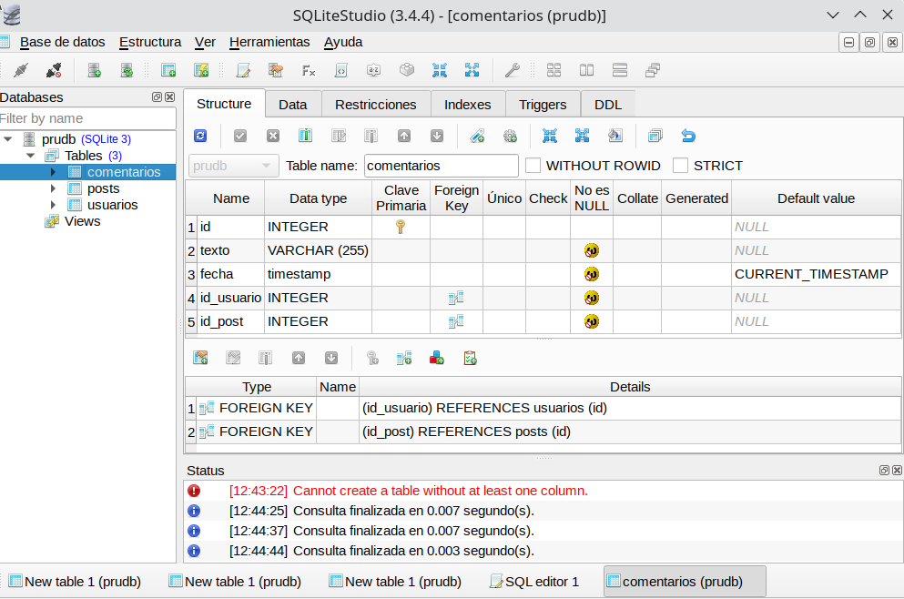
Mediante estos comandos creamos una base de datos en disco llamada prudb.bd.
CREATE TABLE usuarios (
id INTEGER PRIMARY KEY AUTOINCREMENT,
nombre VARCHAR(50) NOT NULL,
apellidos VARCHAR(255) NOT NULL
);
CREATE TABLE posts (
id INTEGER PRIMARY KEY AUTOINCREMENT,
texto VARCHAR(255) NOT NULL,
likes INTEGER NOT NULL,
fecha timestamp NOT NULL DEFAULT CURRENT_TIMESTAMP,
id_usuario INTEGER NOT NULL,
FOREIGN KEY (id_usuario) REFERENCES usuarios(id)
);
CREATE TABLE comentarios (
id INTEGER PRIMARY KEY AUTOINCREMENT,
texto VARCHAR(255) NOT NULL,
fecha timestamp NOT NULL DEFAULT CURRENT_TIMESTAMP,
id_usuario INTEGER NOT NULL,
id_post INTEGER NOT NULL,
FOREIGN KEY (id_usuario) REFERENCES usuarios(id),
FOREIGN KEY (id_post) REFERENCES posts(id)
);Ahora deberemos añadir la librería JDBC (fichero .jar) a nuestro proyecto. Para ello copia el archivo mysql-connector-java-x.x.x.jar (en Ubuntu se encuentra en la ruta /usr/share/java) en JAVA PROJECTS -> Referenced Libraries de VS Code*:
Y ahora modificamos DatabaseConnection:
String host = "jdbc:sqlite:src/main/resources/network";
con = java.sql.DriverManager.getConnection( host);Y hacemos una prueba para ver si funciona:
import java.sql.SQLException;
public class Main {
public static void main(String[] args) {
// TODO Aute-generated mettod stub
Test t = new Test();
t.insertUser();
try {
t.getellUsers();
} catch (SQLException sqle) {
System.out.println(sqle.getMessage());
}
t.closeConnection();
}
}Y este debe ser el resultado:
Conexión realizada
1 Janet Espinosa2. Ejemplos
Vamos a crear una pequeña base de datos para Empleados en Sqlite:
| Num | Nombre | Departamento | Edad | Sueldo |
|---|---|---|---|---|
| 1 | Andreu | 10 | 32 | 1000.00 |
| 2 | Bernat | 20 | 28 | 1200.00 |
| 3 | Claudia | 10 | 26 | 1100.00 |
| 4 | Damià | 10 | 40 | 1500.00 |
Primero creamos un nuevo Proyecto en VSCode llamado EmpleadosBD y le añadimos la librería sqlite al build path.
Creamos también la base de datos mediante la línea de comandos:
cd directorio-del-proyecto
mkdir bd
cd bd
sqlite empleados.bdCopiamos el archivo DatabaseConnection.java del anterior proyecto y modificamos la cadena de conexión:
String host = "jdbc:sqlite:./bd/empleados.bd";
con = java.sql.DriverManager.getConnection( host);2.1. Crear tabla
Creamos una clase CreateTable para poder crear la tabla:
import java.sql.SQLException;
import java.sql.Statement;
public class CreateTable {
static java.sql.Connection con = DatabaseConnection.getInstance().getConnection();
public static vold main(String[] args) {
Statement st = null;
String sql = "CREATE TABLE empleados ( " +
" num INTEGER PRIMARY KEY, " +
" nombre VARCHAR(255), " +
" departamento INTEGER, " +
" edad INTEGER, " +
" sueldo REAL);";
try {
st = con.createStatement();
st.executeUpdate(sql);
} catch (sQLException ex) {
system.out.println("Error " + ex.getMessage());
} finally {
try {
if (st != null && !st.isClosed()) {
st.close();
}
} catch (SQLException ex) {
system.out.println ("No se ha podido cerrar el Statement por alguna razón");
}
try {
if (con != null && !con.isClosed()) {
con.close();
}
} catch (SQLException ex) {
system.out.println ("No se ha podido cerrar el Statement por alguna razón");
}
}
}
}2.2. Insertar datos
Y creamos otra para insertar datos. Esta vez lo haremos con PreparedStatement:
import java.sql.PreparedStatement;
import java.sql.SQLException;
public class InsertData {
static java.sql.Connection con = DatabaseConnection.getInstance().getConnection();
public static void main(String[] args) {
PreparedStatement st = null;
String sql = "INSERT INTO empleados (num, nombre, departamento, edad, sueldo) VALUES (?, ?, ?, ?, ?)";
try {
st = con.prepareStatement(sql);
st.setlnt(1, 1);
st.setString(2, "Andreu");
st.setlnt(3, 10);
st.setlnt(4, 32);
st.setDouble(5, 1000.0);
st.executeUpdate();
st.setlnt(1, 2);
st.setString(2, "Bernat");
st.setlnt(3, 20);
st.setlnt(4, 28);
st.setDouble(5, 1200.0);
st.executeUpdate();
st.setlnt(1, 3);
st.setString(2, "Claudia");
st.setlnt(3, 10);
st.setlnt(4, 26);
st.setDouble(5, 1400.0);
st.executeUpdate();
st.setlnt(1, 4);
st.setString(2, "Damián");
st.setlnt(3, 10);
st.setlnt(4, 40);
st.setDouble(5, 1300.0);
st.executeUpdate();
} catch (SQLException ex) {
System.out.println("Error " + ex.getMessage());
} finally {
try {
if (st != null && !st.isClosed()) {
st.close();
}
} catch (SQLException ex) {
System.out.println("No se ha podido cerrar el Statement por alguna razón");
}
try {
if (con != null && !con.isClosed()) {
con.close();
}
} catch (SQLException ex) {
System.out.println("No se ha podido cerrar Connection por alguna razón");
}
}
}
}Esta es la versión con Statement:
import java.sql.Statement;
import java.sql.SQLException;
public class InsertDataStatement {
static java.sql.Connection con = Databaseconnection.getInstance().getConnection();
public static void main(String[] args) {
Statement st = null;
String sql = "";
try {
st = con.createStatement();
sql = "INSERT INTO EMPLEADOS (num, nombre, departamento, edad, sueldo) VALUES (5, 'Arturo', 10, 32, 1088.8)";
st.executeUpdate(sql);
sql = "INSERT INTO EMPLEADOS (num, nombre, departamento, edad, sueldo) VALSES (6, 'Juan', 28, 28, 1280.8)";
st.executeUpdate(sql);
sql = "INSERT INTO EMPLEADOS (num, nombre, departamento, edad, sueldo) VALUES (2, 'Martín', 10, 26, 1488.8)";
st.executeUpdate(sql);
} catch (SQLEXCeptiOn ex) {
System.ont.println("Error: "+ ex.getMesSege());
} finally {
try {
if (st != null && !st.isClosed()) {
st.close();
}
} catch (SQLException ex) {
System.out.println("No se ha podido cerrar el Statement por alguna razón");
}
try {
if (con != null && !con.isClosed()) {
con.close();
}
} catch (SQLException ex) {
System.out.println("No se ha podido cerrar el Statement por alguna razón");
}
}
}
}Consultar datos
Creamos una clase getAllEmpleados que nos devuelva todos los empleados:
import java.sql.Resultset;
import java.sql.SQLException;
import java.sql.Statement;
public class getAllEmpleados {
static java.sql.Connection con = DatabaseConnection.getInstance().getConnection();
public static void main(String[] args) {
Statement st = null;
Resultset rs = null;
try {
st = con.createStatement();
rs = st.executeQuery("SELECT * FROM empleados");
System.out.println("Núm. \tNombre \tDep \tEdad \tSueldo");
System.out.println("------------------------------------------");
while (rs.next()){
System.out.print(rs.getInt(1) + "\t");
system.out.print(rs.getString(2) + "\t");
system.out.print(rs.getInt(3) + "\t");
system.out.print(rs.getInt(4) + "\t");
System.out.println(rs.getDouble(5));
} catch(SQLException e) {
System.out.println("Se ha producido un error al leer los usuarios " + e.getMessage());
} finally {
try {
//Siempre se debe cerrar todo lo abierto
if (st != null) {
st.close();
}
} catch (java.sql.SQLException ex){
System.out.println("Se ha producido un error: " + ex.getMessage());
}
try {
//Siempre se debe cerrar todo lo abierto
if (rs != null) {
rs.close();
}
} catch (java.sql.SQLException ex){
System.out.println("Se ha producido un error: " + ex.getMessage());
}
}
}
}Modificar datos
Ahora modificamos los datos. Simplemente aumentamos el sueldo un 5% y modificamos el departamento del empleado 3, poniéndole el departamento 3.
import java.sql.Statement;
import java.sql.SQLException;
public class ModifyData {
static java.sql.Connection con = Databaseconnection.getInstance().getConnection();
public static void main(String[] args) {
Statement st = null;
String sql = "";
try {
st = con.createStatement();
sql = "UPDATE EMPLEADOS SET sueldo = sueldo * 1.05";
st.executeUpdate(sql);
sql = "UPDATE EMPLEADOS SET departamento = 20 WHERE num = 3";
st.executeUpdate(sql);
} catch (SQLException ex) {
system.out.printlnr("Error "+ ex.getMessage());
} finally {
try {
if (st != null && !st.isClosed()) {
st.close();
}
} catch (SQLException ex) {
system.out.println("No se ha podido cerrar el Statement por alguna razón");
}
try {
if (con != null && !con.isClosed()) {
con.close();
}
} catch (SQLException ex) {
system.out.println("No se ha podido cerrar el Statement por alguna razón");
}
}
}
}7.11 DAO
Para realizar el ejemplo que seguiremos en este apartado (y en el ejercicio 12: paquete redes) utilizaremos el siguiente fichero sql redes.sql sobre una base de datos nueva denominada redes.
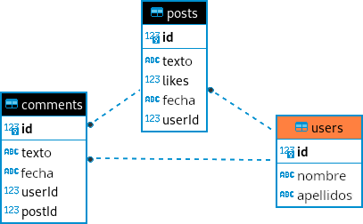
En programación existen una serie de estándares denominados Patrones de Diseño que debes conocer para poder programar según estos patrones y no reinventar la rueda.
Nota
Nosotros vamos a implementar “Repository Pattern” porque también os va a servir para cualquier aplicación tanto web, móvil o de escritorio.
Según la documentación de Android:
The repository pattern is a design pattern that isolates the data layer from the rest of the app. The data layer refers to the part of your app, separate from the UI, that handles the app’s data and business logic, exposing consistent APIs for the rest of your app to access this data.
1. Patrón DAO (Data Access Object)
El patrón DAO es un patrón de diseño que separa la lógica de acceso a datos de la lógica de negocio. Proporciona una abstracción de acceso a datos donde cada entidad (como en el ejercicio 12 de actividades: Usuario, Post, Comentario) tiene su propio DAO que maneja las operaciones CRUD (Create, Read, Update, Delete) específicas de esa entidad. Esto mejora la modularidad y la reutilización del código, ya que la lógica de acceso a datos está encapsulada en objetos DAO dedicados.
2. Implementación paso a paso
Vamos a implementar un ejemplo básico utilizando JDBC para interactuar con una base de datos relacional. Utilizaremos la estructura de base de datos que se proporciona en el ejercicio 12: paquete redes:
2.1. Paso 0: Definir la clase DbConnect
Para simplificar la implementar y conexión a la base de datos podemos crear la clase DbConnect (como ya hemos implementado anteriormente en algunos ejercicios):
package ut07.redes;
import java.sql.Connection;
import java.sql.DriverManager;
import java.sql.SQLException;
public class DbConnect {
private static final String JDBC_URL = "jdbc:mysql://localhost:3306/redes";
private static final String USUARIO = "pr_tuNombre";
private static final String PASSWORD = "pr_tuContraseña";
private static DbConnect dbInstance; // Variable para almacenar la única instancia de la clase
private static Connection con;
// Constructor vacío privado para evitar la instanciación directa
private DbConnect() {
}
// Método estático para obtener la instancia única (Singleton)
public static DbConnect getInstance() {
if (dbInstance == null) {
dbInstance = new DbConnect();
}
return dbInstance;
}
// Método estático para obtener la conexión a la base de datos
public Connection getConnection() throws SQLException {
if (con == null || con.isClosed()) {
con = DriverManager.getConnection(JDBC_URL, USUARIO, PASSWORD);
}
return con;
}
}2.2. Paso 1: Definir las clases de las entidades
Definiremos las clases Usuario, Post, Comentario que representan nuestras entidades:
Por ejemplo: Usuario.java
package ut07.redes;
public class Usuario {
private int id;
private String nombre;
private String apellido;
// constructor
public Usuario(int id, String nombre, String apellido) {
this.id = id;
this.nombre = nombre;
this.apellido = apellido;
}
public int getId() {
return id;
}
public void setId(int id) {
this.id = id;
}
public String getNombre() {
return nombre;
}
public void setNombre(String nombre) {
this.nombre = nombre;
}
public String getApellido() {
return apellido;
}
public void setApellido(String apellido) {
this.apellido = apellido;
}
@Override
public String toString() {
return "Usuario [id=" + id + ", nombre=" + nombre + ", apellido=" + apellido + "]";
}
}2.3. Paso 2: Definir la interface DAO
Luego, definiremos la interfaz DAO para después implementarlas en cada entidad.
Por ejemplo: IRepository.java
package ut07.redes;
import java.sql.SQLException;
import java.util.List;
public interface IRepository<T> {
void crear(T entidad) throws SQLException;; // C: Create
T obtener(int id) throws SQLException;; // R: Read
List<T> obtenerTodos() throws SQLException;; // R: Read (all)
void actualizar(T entidad) throws SQLException;; // U: Update
void eliminar(int id) throws SQLException;; // D: Delete
}2.4. Paso 3: Implementar las clases DAO
Luego, implementaremos las clases DAO para cada entidad utilizando JDBC para interactuar con la base de datos.
Por ejemplo: UsuarioRepositoryImpl.java
package ut07.redes;
import java.sql.*;
import java.util.ArrayList;
import java.util.List;
public class UsuarioRepositoryImpl implements IRepository<Usuario> {
private static final String INSERT_QUERY = "INSERT INTO users (name, lastName) VALUES (?, ?)";
private static final String SELECT_BY_ID_QUERY = "SELECT * FROM users WHERE id = ?";
private static final String SELECT_ALL_QUERY = "SELECT * FROM users";
private static final String UPDATE_QUERY = "UPDATE users SET name = ?, lastName = ? WHERE id = ?";
private static final String DELETE_QUERY = "DELETE FROM users WHERE id = ?";
@Override
public void crear(Usuario usuario) throws SQLException {
try (Connection con = DbConnect.getInstance().getConnection();
PreparedStatement pst = con.prepareStatement(INSERT_QUERY, Statement.RETURN_GENERATED_KEYS)) {
pst.setString(1, usuario.getNombre());
pst.setString(2, usuario.getApellido());
int filasInsertadas = pst.executeUpdate();
if (filasInsertadas > 0) {
ResultSet rs = pst.getGeneratedKeys();
if (rs.next()) {
int id = rs.getInt(1);
usuario.setId(id);
}
}
}
}
@Override
public Usuario obtener(int id) throws SQLException {
Usuario usuario = null;
try (Connection con = DbConnect.getInstance().getConnection();
PreparedStatement pst = con.prepareStatement(SELECT_BY_ID_QUERY)) {
pst.setInt(1, id);
ResultSet rs = pst.executeQuery();
if (rs.next()) {
String nombre = rs.getString("name");
String apellido = rs.getString("lastName");
usuario = new Usuario(id, nombre, apellido);
}
}
return usuario;
}
@Override
public List<Usuario> obtenerTodos() throws SQLException {
List<Usuario> usuarios = new ArrayList<>();
try (Connection con = DbConnect.getInstance().getConnection();
Statement st = con.createStatement();
ResultSet rs = st.executeQuery(SELECT_ALL_QUERY)) {
while (rs.next()) {
int id = rs.getInt("id");
String nombre = rs.getString("name");
String apellido = rs.getString("lastName");
Usuario usuario = new Usuario(id, nombre, apellido);
usuarios.add(usuario);
}
}
return usuarios;
}
@Override
public void actualizar(Usuario usuario) throws SQLException {
try (Connection con = DbConnect.getInstance().getConnection();
PreparedStatement pst = con.prepareStatement(UPDATE_QUERY)) {
pst.setString(1, usuario.getNombre());
pst.setString(2, usuario.getApellido());
pst.setInt(3, usuario.getId());
pst.executeUpdate();
}
}
@Override
public void eliminar(int id) throws SQLException {
try (Connection con = DbConnect.getInstance().getConnection();
PreparedStatement pst = con.prepareStatement(DELETE_QUERY)) {
pst.setInt(1, id);
pst.executeUpdate();
}
}
}2.5. Paso 4: Implementar la lógica de la aplicación
Finalmente, implementaremos la lógica de la aplicación en una clase principal Main donde podremos interactuar con los DAOs y la base de datos.
Por ejemplo: Main.java
package ut07.redes;
import java.sql.Connection;
import java.sql.SQLException;
import java.time.LocalDate;
import java.util.List;
import java.util.Scanner;
public class Main {
public static void main(String[] args) {
Scanner entrada = new Scanner(System.in);
IRepository<Usuario> usuarioDAO = new UsuarioRepositoryImpl();
IRepository<Post> postDAO = new PostRepositoryImpl();
// IRepository<Comentario> comentarioDAO = new ComentarioRepositoryImpl();
try (Connection con = DbConnect.getInstance().getConnection()) {
while (true) {
menuPrincipal();
int opcion = entrada.nextInt();
entrada.nextLine(); // Limpiar el buffer del entrada
switch (opcion) {
case 1:
gestionarUsuarios(entrada, usuarioDAO);
break;
case 2:
// gestionarPosts(entrada, postDAO);
break;
case 3:
// gestionarComentarios(entrada, comentarioDAO, usuarioDAO, postDAO);
break;
case 0:
System.out.println("Saliendo...");
entrada.close();
System.exit(0);
default:
System.out.println("Opción inválida. Intenta de nuevo.");
}
}
} catch (SQLException e) {
System.out.println("Error en la conexión con la base de datos: " + e.getMessage());
}
}
private static void gestionarUsuarios(Scanner entrada, IRepository<Usuario> usuarioDAO) {
while (true) {
menuUsuarios();
int opcion = entrada.nextInt();
entrada.nextLine(); // Limpiar el buffer del entrada
switch (opcion) {
case 1:
System.out.print("Introduce el nombre del usuario: ");
String nombre = entrada.nextLine();
System.out.print("Introduce el apellido del usuario: ");
String apellido = entrada.nextLine();
Usuario nuevoUsuario = new Usuario(0, nombre, apellido); // El ID se genera automáticamente
try {
usuarioDAO.crear(nuevoUsuario);
System.out.println("Usuario creado con ID: " + nuevoUsuario.getId());
} catch (SQLException e) {
System.out.println("Error al crear usuario: " + e.getMessage());
}
break;
case 2:
System.out.print("Introduce el ID del usuario a consultar: ");
int idUsuario = entrada.nextInt();
entrada.nextLine(); // Limpiar el buffer del entrada
try {
Usuario usuario = usuarioDAO.obtener(idUsuario);
if (usuario != null) {
System.out.println("Usuario encontrado:");
System.out.printf(" %-3d %-15s %-15s%n",
usuario.getId(),
usuario.getNombre(),
usuario.getApellido());
} else {
System.out.println("No se encontró ningún usuario con ese ID.");
}
} catch (SQLException e) {
System.out.println("Error al obtener usuario: " + e.getMessage());
}
break;
case 3:
try {
List<Usuario> usuarios = usuarioDAO.obtenerTodos();
if (!usuarios.isEmpty()) {
System.out.println("Listado de Usuarios:");
for (Usuario u : usuarios) {
System.out.println("ID: " + u.getId() + ", Nombre: " + u.getNombre() + ", Apellido: " + u.getApellido());
}
} else {
System.out.println("No hay usuarios registrados.");
}
} catch (SQLException e) {
System.out.println("Error al obtener todos los usuarios: " + e.getMessage());
}
break;
case 4:
System.out.print("Introduce el ID del usuario a actualizar: ");
int idActualizar = entrada.nextInt();
entrada.nextLine(); // Limpiar el buffer del entrada
try {
Usuario usuarioActualizar = usuarioDAO.obtener(idActualizar);
if (usuarioActualizar != null) {
System.out.print("Introduce el nuevo nombre del usuario (deja en blanco para mantener el actual): ");
String nuevoNombre = entrada.nextLine();
if (!nuevoNombre.isEmpty()) {
usuarioActualizar.setNombre(nuevoNombre);
}
System.out.print("Introduce el nuevo apellido del usuario (deja en blanco para mantener el actual): ");
String nuevoApellido = entrada.nextLine();
if (!nuevoApellido.isEmpty()) {
usuarioActualizar.setApellido(nuevoApellido);
}
usuarioDAO.actualizar(usuarioActualizar);
System.out.println("Usuario actualizado correctamente.");
} else {
System.out.println("No se encontró ningún usuario con ese ID.");
}
} catch (SQLException e) {
System.out.println("Error al actualizar usuario: " + e.getMessage());
}
break;
case 5:
System.out.print("Introduce el ID del usuario a eliminar: ");
int idEliminar = entrada.nextInt();
entrada.nextLine(); // Limpiar el buffer del entrada
try {
Usuario usuarioActualizar = usuarioDAO.obtener(idEliminar);
if (usuarioActualizar != null) {
// eliminar primero los comentarios y posts asociados al usuario
// PostRepositoryImpl.eliminarPostPorUsuario(idEliminar);
// luego eliminar el usuario
usuarioDAO.eliminar(idEliminar);
System.out.println("Usuario eliminado correctamente.");
} else {
System.out.println("No se encontró ningún usuario con ese ID.");
}
} catch (SQLException e) {
System.out.println("Error al eliminar usuario: " + e.getMessage());
}
break;
case 0:
return;
default:
System.out.println("Opción inválida. Intenta de nuevo.");
}
}
}
// private static void gestionarPosts(Scanner entrada, IRepository<Post> postDAO) {
// while (true) {
// menuPosts();
// int opcion = entrada.nextInt();
// entrada.nextLine(); // Limpiar el buffer del entrada
// switch (opcion) {
// case 1:
// System.out.print("Introduce el texto del post: ");
// String texto = entrada.nextLine();
// System.out.println("Elige un usuario: ");
// UsuarioRepositoryImpl usuarioRepository = new UsuarioRepositoryImpl();
// List<Usuario> usuarios;
// int usuarioId = 0;
// try {
// usuarios = usuarioRepository.obtenerTodos();
// for (Usuario usuario : usuarios) {
// System.out.println(usuario.getId() + " - " + usuario.getNombre() + " " + usuario.getApellido());
// }
// System.out.print("Introduce el ID del usuario que publica el post: ");
// usuarioId = entrada.nextInt();
// } catch (SQLException e) {
// System.out.println("ERROR: " + e.getMessage());
// }
// Post nuevoPost = new Post(0, texto, 0, LocalDate.now().toString(), usuarioId); // El ID se genera automáticamente
// try {
// postDAO.crear(nuevoPost);
// System.out.println("Post creado con ID: " + nuevoPost.getId());
// } catch (SQLException e) {
// System.out.println("Error al crear post: " + e.getMessage());
// }
// break;
// case 2:
// break;
// case 3:
// break;
// case 4:
// break;
// case 5:
// break;
// case 0:
// return;
// default:
// System.out.println("Opción inválida. Intenta de nuevo.");
// }
// }
// }
// private static void gestionarComentarios(Connection con, Scanner entrada, IRepository<Comentario> comentarioDAO, IRepository<Usuario> usuarioDAO, IRepository<Post> postDAO) {
// // Implementar lógica similar a gestionarUsuarios para Comentarios
// }
// MENÚ PRINCIPAL: menuPrincipal()
private static void menuPrincipal() {
System.out.println("\nMenú Principal:");
System.out.println("1. Gestionar Usuarios");
System.out.println("2. Gestionar Posts");
System.out.println("3. Gestionar Comentarios");
System.out.println("0. Salir");
System.out.print("Selecciona una opción: ");
}
// MENÚ SECUNDARIO: menuUsuarios()
private static void menuUsuarios() {
System.out.println("\nMenú de Usuarios:");
System.out.println("1. Crear usuario");
System.out.println("2. Consultar usuario por ID");
System.out.println("3. Listar todos los usuarios");
System.out.println("4. Actualizar usuario");
System.out.println("5. Eliminar usuario");
System.out.println("0. Volver al menú principal");
System.out.print("Selecciona una opción: ");
}
// MENÚ SECUNDARIO: menuPosts()
private static void menuPosts() {
System.out.println("\nMenú de Posts:");
System.out.println("1. Crear post");
System.out.println("2. Consultar post por ID");
System.out.println("3. Listar todos los posts");
System.out.println("4. Actualizar post");
System.out.println("5. Eliminar post");
System.out.println("0. Volver al menú principal");
System.out.print("Selecciona una opción: ");
}
// MENÚ SECUNDARIO: menuPosts()
private static void menuComentarios() {
System.out.println("\nMenú de Comentarios:");
System.out.println("1. Crear comentario");
System.out.println("2. Consultar comentario por ID");
System.out.println("3. Listar todos los comentarios");
System.out.println("4. Actualizar comentario");
System.out.println("5. Eliminar comentario");
System.out.println("0. Volver al menú principal");
System.out.print("Selecciona una opción: ");
}
}2.6. Consideraciones
- JDBC y SQL Queries: Hemos utilizado JDBC para conectarnos y realizar operaciones en la base de datos. Es importante manejar excepciones y cerrar correctamente las conexiones y recursos.
- Patrón DAO: Este patrón nos ayuda a mantener un código organizado y aislado, separando la lógica de acceso a datos de la lógica de negocio.
- Lógica de la aplicación: En la clase
Main, hemos implementado un menú interactivo que permite al usuario gestionar usuarios, posts y comentarios utilizando los métodos proporcionados por los DAOs. - Adaptabilidad: Puedes expandir este ejemplo añadiendo más funcionalidades o haciendo ajustes según los requisitos de tu aplicación.
7.12 Repaso
1. Objetos JDBC
Como hemos visto en sesiones anteriores, hay tres tipos de objetos que utilizaremos en la interacción con nuestra Base de Datos al usar JDBC. Estos son:
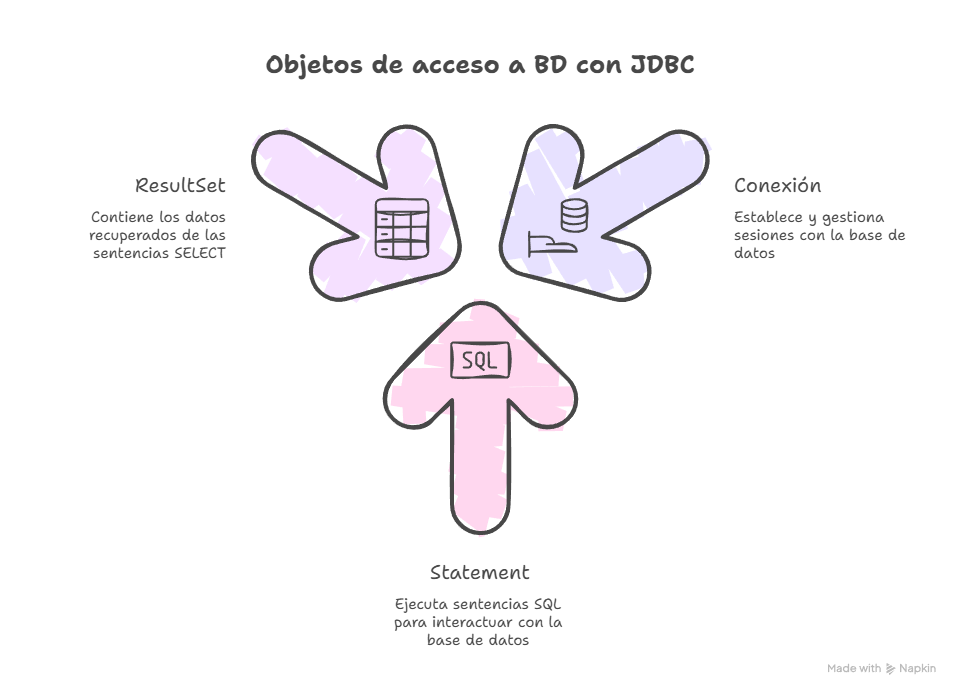
1.1 Connection
Nos va a permitir establecer y finzalizar la conexión a nuestra BD.
En nuestras actividades, lo hemos realizado a través del archivo
DbConnect.java:
Connection con = DbConnect.getInstance().getConnection();1.2 Statement o PreparedStatement
Nos permiten ejecutar sentencias SQL en la BD. Su principal diferencia reside en si la sentencia llevará parámetros (PreparedStatement) o no (Statement).
A lo largo de las actividades hemos visto dos funciones básicas de estos objetos:
executeQuery(sql): Se usa para las sentencias SQL de tipo SELECT.executeUpdate(): Se usa para todas aquellas sentencias SQL que modifican los datos de la BD (INSERT, UPDATE, DELETE).
Statement st = con.createStatement();
ResultSet rs = st.executeQuery("SELECT * FROM alumnos");String sql = "INSERT INTO alumnos (nombre, edad) VALUES (?, ?)";
PreparedStatement pst = con.prepareStatement(sql)
pst.setString(1,nombre);
pst.setInt(2, edad);
int filasModificadas = pst.executeUpdate();Aclaraciones ejemplo anterior
Vamos a analizar con calma el ejemplo que acabamos de ver para PreparedStatement:
- El primer paso es prepara la sentencia SQL. Los
?hacen referencia a aquellos datos que se incluiran como parámetros. - A continuación, se crea el objeto
PreparedStatementusando el métodoprepareStatement(sql). - Una vez creado este objeto, debemos añadir los parámetros que requiere la sentencia SQL declarada en el primer paso. Para ello, usaremos las funciones
setString(),setInt(),setDouble(), etc. - Finalmente, con el uso del método
executeUpdate()se haran efectivos los cambios en la BD. ¿Y qué es eso defilasModificadas? ¿Para que lo quiero? La funciónexecuteUpdate()va a devolver (return) un número (int) que indica el número de filas modificadas en la BD. Este dato me permite conocer si la sentencia se ha ejecutado (se han modificado más de 1 fila) o no.
1.3 ResultSet
El último de los objetos estudiados contiene un conjunto de resultados (datos) obtenidos tras ejecutar una sentencia SQL de tipo SELECT.
Para acceder a sus datos vamos a necesitar varias funciones:
next(): nos va a permitir recorrer la estructura. Es decir, mientras queden datos en ella, irá recorriendola para que podamos ir accediendo a las filas de la BD.
Pero, ¿cómo me quedo con cada uno de los datos (columnas) almacenados? Para ello contamos con los métodos:
getString(nombreColumna)getInt(nombreColumna)getDouble(nombreColumna)
ResultSet rs = pst.executeQuery();
//Recorrer datos devueltos
while (rs.next()) {
String nombre = rs.getString("nombre");
int edad = rs.getInt("edad");
System.out.println("El alumno " + nombre + " tiene " +edad + " años.");
}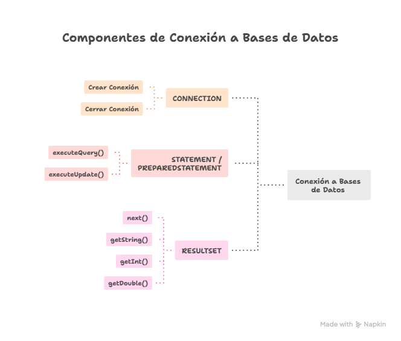
2. Control de excepciones
Una vez estudiados todos los objetos, sus usos y métodos, ¿Cómo puedo saber si debo usar las sentencias try-catch para controlar las excepciones?
Usaremos este tipo de sentencias siempre que vayamos a realizar una conexión o cambios en la BD que pueden no tener exito (por fallo de conexión, falta de driver, errores en el SQL, etc).
Algunos casos en los que SIEMPRE las usaremos son:
- Al crear la conexión en el método principal (main):
try (Connection con = DbConnect.getInstance().getConnection()) {
//Realizar acciones...
} catch (SQLException ex) {
System.out.println("ERROR al conectar: " + ex.getMessage());
} - Cada vez que creemos un
StatementoPreparedStatementen los archivos de tipo Repository:
try (Statement st = con.createStatement()) {
//...
} try (PreparedStatement pst = con.prepareStatement(sql)) {
//...
}3. Pasos para construir el método completo
Con toda la información anterior asimilada, ¿Qué pasos debo seguir para construir un método completo de consulta / modificación de BD?
Mi primera tarea será analizar y decidir si voy mi método requiere el uso de Statement o PreparedStatement.
Con esta decisión tomada, los pasos serán los siguientes.
3.1 Pasos para Statement
- Crear la conexión a la BD, es decir, el objeto
Connection. - Crear el objeto
Statement(recuerda el uso detry-catch) - Ejecutar la sentencia, usando
executeQuery(sql)oexecuteUpdate(). - En caso de una sentencia SELECT, crear y recorrer el objeto
ResultSet. En caso de una actualización, comprobar las filas modificadas.
Analizemos un ejemplo completo con Statement
public void listarAlumnos() throws SQLException{
Connection con = DbConnect.getInstance().getConnection();
try (Statement st = con.createStatement()) {
ResultSet rs = st.executeQuery("SELECT * FROM alumnos");
//Recorrer datos devueltos
while (rs.next()) {
String nombre = rs.getString("nombre");
int edad = rs.getInt("edad");
System.out.println("El alumno " + nombre + " tiene " +edad + " años.");
}
}
}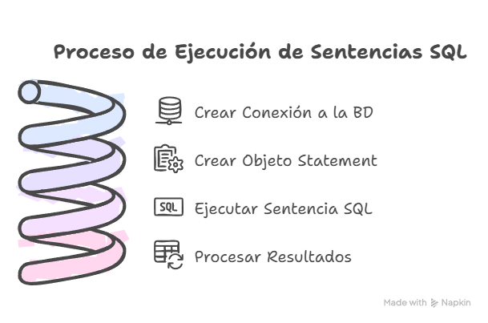
3.2 Pasos para PreparedStatement
- Crear la conexión a la BD, es decir, el objeto
Connection. - Preparar la sentencia SQL.
- Crear el objeto
PreparedStatement(recuerda el uso detry-catch) - Añadir los parámetros requeridos a la sentencia creada en el paso 2 con la ayuda de
setString(indice, parámetro),setInt(indice, parámetro), etc. - Ejecutar la sentencia, usando
executeQuery(sql)oexecuteUpdate(). - En caso de una sentencia SELECT, crear y recorrer el objeto
ResultSet. En caso de una actualización, comprobar las filas modificadas.
Analizemos un ejemplo de SELECT con PreparedStatement
public void listarPostsUsuario(int usuario) throws SQLException {
Connection con = DbConnect.getInstance().getConnection();
String sql = "SELECT * FROM posts WHERE usuario_id = ?";
try (PreparedStatement pst = con.prepareStatement(sql)) {
pst.setInt(1, usuario);
ResultSet rs = pst.executeQuery();
System.out.println("Posts del usuario " + usuario + ":");
while (rs.next()) {
int id = rs.getInt("id");
String titulo = rs.getString("titulo");
String contenido = rs.getString("contenido");
String fecha = rs.getString("fecha_publicacion");
System.out.println(id + ". " + titulo + ": " + contenido + " (" + fecha + ")");
}
}
}Analizemos un ejemplo de modificación con PreparedStatement
public void cambiarFecha(int id, String fecha) throws SQLException {
Connection con = DbConnect.getInstance().getConnection();
String sql = "UPDATE posts SET fecha_publicacion = ? WHERE id = ?";
try (PreparedStatement pst = con.prepareStatement(sql)) {
pst.setString(1, fecha);
pst.setInt(2, id);
int filasModificadas = pst.executeUpdate();
if (filasModificadas > 0) {
System.out.println("Post con id '" + id + "' modificado.");
} else {
System.out.println("No se encontró ningún posts para el id '" + id);
}
}
}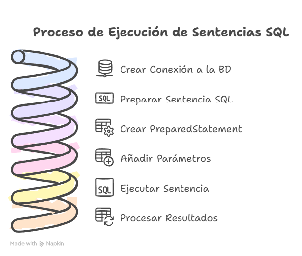
Actividades UT07
Bloque 7.0
Empaquetar actividades
Empaqueta las actividades, dentro de la carpeta ut07, en la carpeta /bloqueX.
Actividad 01
Package: A01_pedidos
Desarrolla una clase Pedido que permita la gestión de pedidos en una base de datos orientada a objetos.
La tabla pedidos tiene las columnas id, cliente, producto, cantidad, fecha.
Implementa los métodos necesarios para:
- Crear un nuevo pedido para un cliente.
- Mostrar todos los pedidos de un cliente específico.
- Eliminar todos los pedidos de un cliente específico.
Bloque 7.1
Actividad 02
Package: A02_posts
Desarrolla una aplicación que permita gestionar los pedidos de una tienda.
La tabla posts tiene las columnas id, usuario_id, titulo, contenido, fecha_publicacion.
Implementa los métodos necesarios para:
- Registrar un nuevo posts.
- Mostrar los posts de un usuario específico.
- Eliminar todos los posts de un usuario específico.
- Cambiar la fecha de un post (filtra por id).
- Mostrar todos los posts de la BBDD.
En el main de la clase Test, implementa un menú para que el usuario pueda ejecutar todas las funcionalidades anteriores.
Ayuda menú
Scanner sc = new Scanner(System.in);
int opcion = 0;
PostsRepository postsDAO = new PostsRepository();
try (Connection con = DbConnect.getInstance().getConnection()) {
do {
System.out.println("\n MENÚ: ");
System.out.println("1. Nuevo post");
System.out.println("2. Mostrar posts de usuario");
System.out.println("3. Eliminar posts usuario");
System.out.println("4. Cambiar la fecha de un post");
System.out.println("4. Mostrar todos los posts");
System.out.println("0. Salir");
System.out.print("Selecciona una opción: ");
opcion = sc.nextInt();
sc.nextLine(); // Limpiar buffer
switch (opcion) {
case 1:
//Realizar acciones necesarias
break;
case 2:
//Realizar acciones necesarias
System.out.println("Introduce el id de usuario:");
int uid2 = sc.nextInt();
postsDAO.listarPostsUsuario(uid2);
break;
case 3:
//Realizar acciones necesarias
break;
case 4:
//Realizar acciones necesarias
break;
case 5:
//Realizar acciones necesarias
break;
case 0:
System.out.println("Saliendo del sistema...");
break;
default:
System.out.println("Opción inválida. Intenta de nuevo.");
}
} while (opcion != 0);
} catch (SQLException ex) {
System.out.println("ERROR al conectar: " + ex.getMessage());
}Bloque 7.2
Actividad 03
Análisis de índices en una tabla: Crea una aplicación que permita analizar los índices de una tabla en una base de datos relacional. Conéctate a la base de datos utilizando JDBC y muestra los índices asociados a la tabla clientes.
Operaciones:
- Mostrar los índices de la tabla.
- Comprobar si hay claves primarias o foráneas asociadas.
Actividad 04
_04_GestionProductos: Supongamos que tienes una base de datos que almacena información sobre productos. La tabla productos tiene las siguientes columnas:
id: Identificador único del producto (entero).nombre: Nombre del producto (cadena de texto).precio: Precio del producto (decimal).
Tu tarea es escribir un programa Java _02_GestionProductos que realice las siguientes operaciones utilizando los métodos proporcionados:
mostrarProductosPorPagina(): mostrar una página de productos cada vez que el usuario lo solicite. Cada página debe contener 5 productos. Implementa las funciones para mover el cursor a la primera página, página siguiente, página anterior, última página y una página específica utilizando el métodoabsolute(int row).buscarProductoPorNombre(String nombre): permitir al usuario buscar un producto por su nombre. Utiliza el métodorelative(int registros)para desplazar el cursor hacia adelante o hacia atrás según la coincidencia del nombre.
Bloque 7.3
Actividad 05
_05_GestionEmpleados: Tenemos nuestra base de datos pr_tuNombre que almacena información sobre empleados. La tabla empleados tiene las siguientes columnas:
id: identificador único del empleado (entero).nombre: nombre del empleado (cadena de texto).salario: salario del empleado (decimal).
Es escribir un programa Java _01_GestionEmpleados que realice las siguientes operaciones utilizando diferentes tipos de resultado y opciones de concurrencia:
listarEmpleados: mostrar en la consola todos los empleados y sus salarios.incrementoSalarioAnual: incrementar el salario de todos los empleados en un 10%.eliminarEmpleadosSalario: eliminar todos los empleados cuyo salario sea menor que 3000€.actualizarSalarioEmpleado: actualiza el salario de un empleado filtrado por nombre.eliminarEmpleadoId: eliminar un empleado filtrado por id.
En el
maincrea un menú que permita al usuario acceder a las diferentes funcionalidades.
Actividad 06
_06_GestionVentas: Supongamos que tienes una base de datos que almacena información sobre ventas. La tabla ventas tiene las siguientes columnas:
id: Identificador único de la venta (entero).producto: Nombre del producto vendido (cadena de texto).cantidad: Cantidad de productos vendidos (entero).total: Total de la venta (decimal).
Tu tarea es escribir un programa Java _05_GestionVentas que realice las siguientes operaciones utilizando los métodos proporcionados:
- Calcular el total de ventas: Muestra al usuario la suma del precio total de las ventas almacenadas en el sistema.
- Buscar ventas por producto: Permite al usuario ingresar el nombre de un producto y devuelve las ventas de ese producto.
- Calcular el total de € ganados con un producto: Permite al usuario ingresar el nombre de un producto y devuelve el precio total de las ventas de dicho producto.
En el
maincrea un menú que permita al usuario acceder a las diferentes funcionalidades.
Actividad 07
_07_GestionLibros: Supongamos que tienes una base de datos que almacena información sobre libros. La tabla libros tiene las siguientes columnas:
id: Identificador único del libro (entero).titulo: Título del libro (cadena de texto).autor: Nombre del autor del libro (cadena de texto).anio_publicacion: Año de publicación del libro (entero).
Tu tarea es escribir un programa Java que realice las siguientes operaciones utilizando los métodos proporcionados:
-
buscarLibroPorAutor(String autor): permite al usuario ingresar el nombre de un autor y muestra todos los libros escritos por ese autor. -
mostrarLibrosPorDecada(int decada): permite al usuario ingresar una década y mostrar todos los libros publicados en esa década.
Ayuda
Sugerencia:
- Utiliza el método
preparedStatement(sql)con una consulta en la que se listen los libros comprendidos en una década y ordenados de forma descendente por elanio_publiacion. - Si el usuario me introduce la decada 1990, la consulta SQL será:
SELECT * FROM libros WHERE anio_publicacion BETWEEN 1990 AND 1999 ORDER BY anio_publicacion DESC;
En el
maincrea un menú que permita al usuario acceder a las diferentes funcionalidades.
Bloque 7.4
Actividad 08
_08_GestionLibros: Supongamos que tienes una base de datos que almacena información sobre libros. La tabla libros tiene las siguientes columnas:
id: Identificador único del libro (entero).titulo: Título del libro (cadena de texto).autor: Nombre del autor del libro (cadena de texto).anio_publicacion: Año de publicación del libro (entero).
Tu tarea es escribir un programa Java que realice las siguientes operaciones utilizando los métodos proporcionados:
-
buscarLibroPorAutor(String autor): permite al usuario ingresar el nombre de un autor y muestra todos los libros escritos por ese autor. -
mostrarLibrosPorDecada(int decada): permite al usuario ingresar una década y mostrar todos los libros publicados en esa década.
Ayuda
Sugerencia:
- Utiliza el método
preparedStatement(sql)con una consulta en la que se listen los libros comprendidos en una década y ordenados de forma descendente por elanio_publiacion. - Si el usuario me introduce la decada 1990, la consulta SQL será:
SELECT * FROM libros WHERE anio_publicacion BETWEEN 1990 AND 1999 ORDER BY anio_publicacion DESC;
En el
maincrea un menú que permita al usuario acceder a las diferentes funcionalidades.
Actividad 09
_09_GestionEmpleados (continuación): Continuando con el ejercicio de gestión de empleados, copia el programa GestionEmpleados, cambia el nombre a _09_gestionEmpleados y agrega algunas funcionalidades adicionales:
- Mostrar información del empleado por ID: Permite al usuario ingresar el ID de un empleado y muestra toda la información relacionada con ese empleado. Utiliza el método
absolute(int row)para posicionarte en el registro del empleado especificado. - Buscar empleados por salario: Permite al usuario ingresar un rango de salarios y mostrar todos los empleados cuyo salario esté dentro de ese rango. Utiliza el método
next()para recorrer todas las filas y filtrar los empleados según el criterio de salario.
Actividad 10
_10_GestionEstudiantes: Supongamos que tienes una base de datos que almacena información sobre estudiantes. La tabla estudiantes tiene las siguientes columnas:
id: Identificador único del estudiante (entero).nombre: Nombre del estudiante (cadena de texto).edad: Edad del estudiante (entero).promedio: Promedio de calificaciones del estudiante (decimal).
Tu tarea es escribir un programa Java que realice las siguientes operaciones utilizando los métodos proporcionados:
- Mostrar la posición actual del estudiante: Muestra la posición del estudiante actual en el conjunto de resultados. Utiliza el método
getRow()para obtener el número de registro actual. - Validar la posición del cursor: Verifica si el cursor está antes del primer registro, en el primer registro, en el último registro o después del último registro. Utiliza los métodos
isBeforeFirst(),isFirst(),isLast()eisAfterLast()para realizar estas verificaciones.
En el
maincrea un menú que permita al usuario acceder a las diferentes funcionalidades.
Actividad 11
_11_GestionProductos (continuación): Continuando con el ejercicio de gestión de productos, copia el programa GestionProductos, cambia el nombre a _11_gestionProductos y y agrega algunas funcionalidades adicionales:
- Mostrar el número total de productos: Muestra el número total de productos en la base de datos. Utiliza el método
getRow()para obtener el número de registro actual ylast()para mover el cursor a la última fila. - Verificar si hay productos disponibles: Verifica si hay algún producto disponible en la base de datos. Utiliza los métodos
isBeforeFirst()eisAfterLast()para determinar si el cursor está antes del primer registro o después del último registro, respectivamente.
En el
maincrea un menú que permita al usuario acceder a las diferentes funcionalidades.
Bloque 7.5
Actividad 12
A12_GestionPosts : Crea una aplicación que permita gestionar los posts y comentarios almacenados en una base de datos.
El usuario podrá:
- Modificar el título de un post.
UPDATE posts SET titulo = ? WHERE id = ? - Eliminar los posts obsoletos (aquellos con más de un año desde su publicación).
DELETE FROM posts WHERE fecha_publicacion < '2024-01-01' - Añadir un comentario a un post.
INSERT INTO comentarios(usuario_id, post_id, contenido, fecha_comentario) VALUES (?, ?, ?, ?) - Eliminar todos los comentarios de un post.
DELETE FROM comentarios WHERE post_id = ? - Consultar los comentarios de un post (Se debe mostrar el título del post y el nombre del usuario, no su id).
Ayuda
Para este caso necesitaremos tres métodos:
- El primero sacará toda la información de la tabla comentarios filtrando por el id del post buscado. Su SQL será:
SELECT * FROM comentarios WHERE post_id=? - Una vez tengamos esta información, le pasaremos el id del usuario obtenido a otro método que nos devolverá su nombre:
Su SQL será:
public String nombreUsuario(int idUsuario) throws SQLException{ //...RELLENAR... }SELECT nombre FROM usuarios WHERE id = ? - Igual que lo hemos hecho para el usuario, necesitaremos un método que nos permita conocer el nombre de un post a partir de su id. Basandote en el ejemplo anterior, ¿cómo lo harías?
En el
maincrea un menú que permita al usuario acceder a las diferentes funcionalidades.
Actividad 13
A13_ActualizaciónProductos : Desarrolla una aplicación que permita actualizar los precios de los productos en la tabla productos.
Implementa:
- Método
actualizarPrecios()que aplique un incremento del 10% a todos los productos cuyo precio sea inferior a 20 euros.UPDATE productos SET precio = precio*1.10 WHERE precio < 20 - Método
actualizarPrecioID(double precio)que actualice el precio de un producto determinado.UPDATE productos SET precio = ? WHERE id = ?
En el
maincrea un menú que permita al usuario acceder a las diferentes funcionalidades.
Bloque 7.6
Archivos sql
Para realizar las actividades de este bloque deberás importar el archivo ventasYbanco.sql en tu base de datos.
Actividad 14
_14_ProductosObsoletos: Desarrolla una aplicación que permita gestionar los productos obsoletos de una tienda.
La tabla orders contiene los productos de la tabla products vendidos, con la cantidad y la fecha de cada compra.
Haz métodos para:
- Mostrar todos los pedidos realizados Mostrando el nombre del producto (tabla products), NO su id.
- Mostrar los pedidos de un producto (filtrado por nombre).
- EXTRA: Eliminar los productos obsoletos (hace más de un año que no se han vendido).
En el
maincrea un menú que permita al usuario acceder a las diferentes funcionalidades.
Actividad 15
_15_GestionClientesBanco: Supongamos que tienes una base de datos que almacena información sobre los clientes de un banco (clients) y sus cuentas bancarias (accounts).
Tu tarea es escribir un programa Java que realice las siguientes operaciones:
- Mostrar el nombre de todos los clientes junto con sus cuentas.
SELECT * FROM accounts; SELECT nombre FROM clients WHERE id = ?; - Actualizar el teléfono de un cliente.
UPDATE clients SET telefono = ? WHERE id = ?; - Actualizar la dirección de un cliente.
UPDATE clients SET direccion = ? WHERE id = ?; - Mostrar el total de dinero almacenado en el banco.
SELECT saldo FROM accounts; - Insertar un nuevo cliente.
INSERT INTO clients(nombre, direccion, telefono) VALUES (?, ?, ?); - Insertar una nueva cuenta (asociada a un cliente).
INSERT INTO accounts(saldo, id_cliente) VALUES (?, ?); - Mostrar el cliente propietario de la cuenta con más dinero.
SELECT * FROM accounts ORDER BY saldo DESC LIMIT 1; SELECT nombre FROM clients WHERE id = ?; - Actualizar el dinero de una cuenta.
UPDATE accounts SET saldo = ? WHERE id = ?; - Eliminar una cuenta.
DELETE FROM accounts WHERE id = ?; - Eliminar un cliente y todas sus cuentas.
DELETE FROM accounts WHERE id_cliente = ?; DELETE FROM clients WHERE id = ?;
En el
maincrea un menú que permita al usuario acceder a las diferentes funcionalidades.
Actividad 16
_16_GestionPedidos: Supongamos que tienes una base de datos que almacena información sobre pedidos. La tabla pedidos tiene las siguientes columnas:
id: Identificador único del pedido (entero).cliente: Nombre del cliente que realizó el pedido (cadena de texto).producto: Nombre del producto pedido (cadena de texto).cantidad: Cantidad del producto solicitada en el pedido (entero).fecha: Fecha en que se realizó el pedido (fecha).
Tu tarea es escribir un programa Java _06_GestionPedidos que realice las siguientes operaciones utilizando los métodos proporcionados:
- Listar pedidos por cliente: Permite al usuario ingresar el nombre de un cliente y mostrar todos los pedidos realizados por ese cliente. Utiliza el método
relative(int registros)para desplazarte a través de los registros según las coincidencias del cliente. - Buscar pedidos por fecha: Permite al usuario ingresar una fecha y mostrar todos los pedidos realizados en esa fecha. Utiliza el método
afterLast()yprevious()para mover el cursor al final y luego retroceder, así puedes comenzar desde la última fila.
Actividad 17
_17_GestionEmpleados (continuación): Continuando con el ejercicio de gestión de empleados del séptimo ejercicio, copia el programa _10_GestionEmpleados y agrega algunas funcionalidades adicionales:
- Verificar si hay empleados en la base de datos: Verifica si hay algún empleado registrado en la base de datos. Utiliza los métodos
isBeforeFirst()eisAfterLast()para determinar si el cursor está antes del primer registro o después del último registro, respectivamente. - Mostrar el primer empleado: Muestra la información del primer empleado en la base de datos. Utiliza el método
first()para mover el cursor al primer registro y luego muestra la información del empleado.
Actividad 18
_18_GestionClientes: Imagina que tienes una base de datos que almacena información sobre clientes. La tabla clientes tiene las siguientes columnas:
id: Identificador único del cliente (entero).nombre: Nombre del cliente (cadena de texto).correo: Correo electrónico del cliente (cadena de texto).telefono: Número de teléfono del cliente (cadena de texto).
Tu tarea es escribir un programa Java _11_GestionClientes que realice las siguientes operaciones utilizando los métodos proporcionados:
- Mostrar la posición actual del cliente: Muestra la posición actual del cliente en el conjunto de resultados. Utiliza el método
getRow()para obtener el número de registro actual. - Mostrar información del último cliente: Muestra la información del último cliente en la base de datos. Utiliza el método
last()para mover el cursor al último registro y luego muestra la información del cliente.
Bloque 7.7
Empaquetar actividades
Empaqueta las actividades, dentro de la carpeta ut07, en la carpeta /bloque7.
Actividad 19
Empaqueta toda esta actividad en: ut07/actividades/ce6acdef/redes
Crea una aplicación que nos permita gestionar la base de datos redes.sql.
Debe tener un menú desde el que se puedan gestionar (Create, Read, Update, Delete) usuarios, posts y comentarios.
Ayuda SQL
- SELECT:
SELECT * FROM comments; - INSERT:
INSERT INTO comments(texto, fecha, userId, postId) VALUES(?, ?, ?, ?); - UPDATE:
UPDATE comments SET texto = ? WHERE id = ?; - DELETE:
DELETE FROM comments WHERE id = ?;
Retos
Empaquetar retos
Empaqueta las actividades, dentro de la carpeta ut07, en la carpeta retos.
Las actividades programadas en esta sección Retos no son obligatorias.
Ejemplo de conexión y acceso a base de datos
Veamos un ejemplo completo de conexión y acceso a una base de datos utilizando todos los elementos mencionados en este apartado.
try {
// Cargamos la clase que implementa el Driver
Class.forName("com.mysql.cj.jdbc.Driver").newInstance();
// Creamos una nueva conexión a la base de datos 'miBaseDeDatos'
String jdbc_url = "jdbc:mysql://localhost:3306/pr_tuNombre";
String usuario = "pr_tuNombre";
String passwd = "tuContraseña";
Connection conn = DriverManager.getConnection(jdbc_url,usuario,passwd);
// Obtenemos un Statement de la conexión
Statement st = conn.createStatement();
// Ejecutamos una consulta SELECT para obtener la tabla vendedores
String sql = "SELECT * FROM vendedores";
ResultSet rs = st.executeQuery(sql);
// Recorremos todo el ResultSet y mostramos sus datos
while(rs.next()) {
int id = rs.getInt("id");
String nombre = rs.getString("nombre");
Date fecha = rs.getDate("fecha_ingreso");
float salario = rs.getFloat("salario");
System.out.println(id + " " + nombre + " " + fecha + " " + salario);
}
// Cerramos el statement y la conexión
st.close();
conn.close();
} catch (SQLException e) {
System.out.println("ERROR: " + e.getMessage());
} catch (Exception e) {
System.out.println("ERROR: " + e.getMessage());
} finally {
try{
if (rs != null){
rs.close();
}
} catch (){
System.out.println("ERROR: " + e.getMessage());
}
} finally {
try{
if (st != null){
rs.close();
}
} catch (){
System.out.println("ERROR: " + e.getMessage());
}
} finally {
try{
if (conn != null){
rs.close();
}
} catch (){
System.out.println("ERROR: " + e.getMessage());
}
}Reto 01
Gestión de inventario en un sistema de tienda: Crea una aplicación Java que gestione una base de datos de productos para una tienda.
La tabla productos contiene columnas como id, nombre, precio y cantidad.
Implementa una clase Producto y utiliza un método mostrarInventario() para mostrar la información de los productos almacenados en la base de datos.
Operaciones:
- Mostrar todos los productos en inventario.
- Consultar un producto específico por su ID.
Reto 02
Registro de empleados en una base de datos: Crea una aplicación Java que permita registrar empleados en una base de datos.
La tabla empleados tiene columnas como id, nombre, departamento, y salario.
Implementa una clase Empleado y un método registrarEmpleado() que almacene los datos en la base de datos.
Operaciones:
- Registrar un nuevo empleado.
- Mostrar la lista de empleados registrados.
Reto 03
Identificación de las propiedades de una conexión JDBC: Desarrolla un programa en Java que conecte a una base de datos utilizando JDBC.
El programa debe identificar y mostrar las propiedades de la conexión, como el nombre de la base de datos, el usuario actual, y las características del sistema gestor de bases de datos.
Operaciones:
- Mostrar la versión del sistema gestor de la base de datos.
- Mostrar el nombre del usuario conectado.
Reto 04
Registrar productos en una base de datos: Crea una aplicación que permita registrar productos en una base de datos relacional.
La tabla productos contiene columnas como id, nombre, precio, stock.
Implementa un método para insertar un nuevo producto y almacenar la información.
Operaciones:
- Insertar un nuevo producto.
- Verificar si el producto se ha almacenado correctamente.
Reto 05
Registro de transacciones bancarias: Desarrolla una aplicación que permita registrar transacciones en una tabla transacciones con columnas como id, cuenta_origen, cuenta_destino, monto, y fecha.
El programa debe almacenar la transacción en la base de datos.
Operaciones:
- Registrar una nueva transacción.
- Verificar si la transacción se ha registrado correctamente.
Reto 06
Consultar clientes en una base de datos: Desarrolla una aplicación Java que permita consultar los datos de la tabla clientes.
Implementa un método mostrarClientes() que recupere y muestre todos los registros de clientes almacenados en la base de datos.
Operaciones:
- Mostrar todos los clientes.
- Consultar un cliente por su ID.
Reto 07
Mostrar el catálogo de una tienda en línea: Crea una aplicación que conecte a la base de datos de una tienda en línea y muestre el catálogo de productos almacenados.
Los productos deben visualizarse con su id, nombre, precio, y disponibilidad.
Operaciones:
- Mostrar todos los productos disponibles.
- Consultar un producto por su nombre.